1. 프로젝트 개요
GovBiz는 정부지원사업 탐색부터 신청 준비까지 연결하는 AI 서비스입니다. 여러 기관에 흩어진 공고를 모아, 기업의 조건과 목적에 맞는 사업을 찾고 신청 준비와 진행 상황까지 관리할 수 있도록 돕습니다.
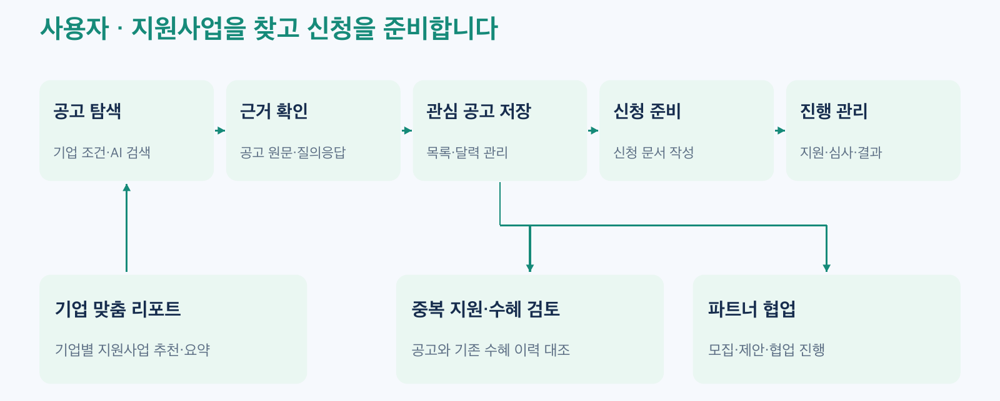
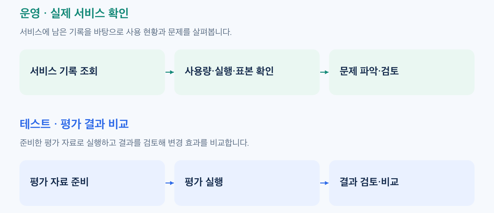
3차 프로젝트의 주요 기능을 유지하면서, 클라이언트와 운영·배포 환경을 확장했습니다.
3차 프로젝트 링크 : AI Agent 를 활용한 정부지원사업 탐색·신청 관리 플랫폼
| 영역 | 3차 프로젝트 기반 | 4차 프로젝트 확장 |
|---|---|---|
| 서비스 | 공고 검색·근거 답변·신청 준비·중복 검토·협업 파트너 탐색 | LLM 기반 라우팅으로 사용자 요청을 기존 업무 기능에 연결 |
| 클라이언트 | 웹 중심 사용자 경험 | Expo 모바일 추가 · 웹·앱의 공통 계약과 로직 공유 |
| 품질 운영 | 검색·RAG 품질 평가 및 일부 실행 결과 보존 | 운영: 실행 추적·사용량·표본 검토 평가: 고정 자료 평가·모델 비교·사람 검토·품질 판정 실행 관리: Prefect 실행·예산·일정 관리 |
| 실행 환경 | EC2 + Docker Compose | Kubernetes(EKS) + EC2 노드 |
| 배포 반영 | SSM으로 EC2에 배포 명령을 전달하고, 기존 Compose 설정을 사용해 Core·AI 컨테이너를 새 이미지로 교체 | Argo CD가 Git의 배포 설정을 EKS에 자동 반영 |
| 자동 확장 | 자동 확장 구성 기록 없음 | HPA(Pod) + Cluster Autoscaler(EC2) |
2. 시스템 아키텍처
아래 구조도는 접속 → 서비스·데이터 → 평가·관측 → 서버 배치 → 외부 통신 → 빌드 → 배포 순서로 살펴봅니다. 세부 설정은 각 그림 아래에서 펼쳐 볼 수 있습니다.
접속 경로 — 웹·앱에서 백엔드까지
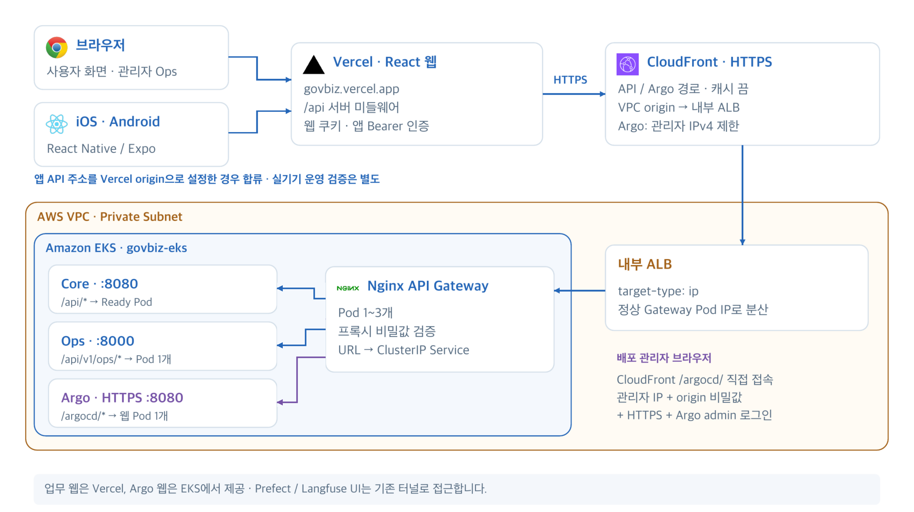
- 웹·앱 요청: 인증과 프록시를 거쳐 Gateway에 도착합니다.
- 서비스 연결: Gateway가 URL에 따라 Core·Ops 등 내부 서비스로 전달합니다.
- Argo CD: 관리 화면은 별도 관리자 경로로 접속합니다.
접속·인증 설정 펼쳐 보기
| 구성 요소 | 세부 설정·역할 |
|---|---|
| 브라우저 | 사용자 화면 · 관리자 Ops |
| iOS · Android | React Native / Expo |
| Vercel · React 웹 | govbiz.vercel.app · /api 서버 미들웨어 · 웹 쿠키 · 앱 Bearer 인증 |
| CloudFront | API / Argo 경로: 캐시 끔 · VPC origin → 내부 ALB · Argo 접속: 관리자 IPv4 제한 |
| 내부 ALB | target-type: ip · 정상 Gateway Pod IP로 분산 |
| Nginx API Gateway | EKS · govbiz-eks / Pod 1~3개 · 프록시 비밀값 검증 · URL → ClusterIP Service |
| Core · :8080 | /api/* · → Ready Pod |
| Ops · :8000 | /api/v1/ops/* · → Pod 1개 |
| Argo · :8080 | HTTPS · /argocd/* · → 웹 Pod 1개 |
| 배포 관리자 접속 | 관리자 브라우저 → CloudFront /argocd/ 직접 접속 · 관리자 IP + origin 비밀값 + HTTPS + Argo admin 로그인 |
앱의 Vercel 경로는 API 주소 설정에 따라 합류합니다. 실기기 운영 검증은 별도입니다.
서비스·데이터 — 업무를 처리하고 저장하는 방식
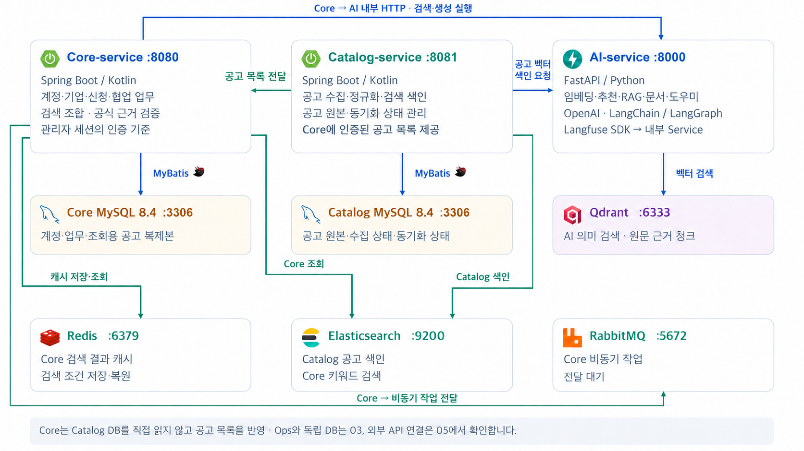
- Core-service: 사용자 업무와 검색을 처리하고, Catalog의 공고 스냅샷을 조회용 데이터에 반영합니다.
- Catalog-service: 공고를 수집·정규화하고 검색 색인을 관리합니다.
- AI-service: 임베딩·모델 추론·벡터 검색 실행을 담당합니다. Qdrant에 공고 검색 벡터와 답변 근거 청크를 저장하고 OpenAI API를 활용해 검색·생성 기능을 제공합니다.
- 저장소: 각 서비스는 역할에 맞는 저장소를 사용합니다.
- 비동기 작업: Core DB에 작업을 기록하고 RabbitMQ에 작업 ID를 전달합니다.
평가·관측 — 실행 기록과 평가 결과의 연결
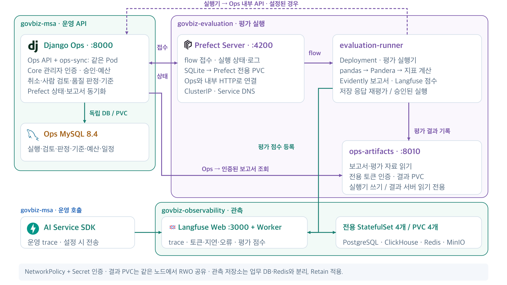
- 실사용 추적: AI 서비스가 실행 기록을 Langfuse에 전송합니다.
- 평가 점수: 평가 실행기가 점수를 계산해 Langfuse에 등록합니다. 실사용 추적과는 별도 경로입니다.
- 평가 결과: 평가 실행기가 결과 파일을 저장하고, Ops가 보고서를 읽어 검증한 뒤 실행 요약과 비교 결과를 저장합니다.
- 운영 화면: React는 Ops API에서 평가 결과를 받아 표시합니다.
평가·관측 설정 펼쳐 보기
| 구성 요소 | 세부 설정·역할 |
|---|---|
| Django Ops · :8000 | govbiz-msa / Ops API + ops-sync: 같은 Pod · Core 관리자 인증 · 승인·예산·취소 · 사람 검토·품질 판정·기준 · Prefect 상태·보고서 동기화 · 저장 → Ops MySQL 8.4 (독립 DB / PVC) · 저장 항목: 실행·검토·판정·기준·예산·일정 |
| Prefect Server · :4200 | govbiz-evaluation / ClusterIP · Service DNS · flow 접수 · 실행 상태·로그 · SQLite → Prefect 전용 PVC · Ops와 내부 HTTP로 연결 |
| evaluation-runner | Deployment · 평가 실행기 · pandas → Pandera → 지표 계산 · Evidently 보고서 · Langfuse 점수 · 저장 응답 재평가 / 승인된 실행 |
| ops-artifacts · :8010 | 평가 자료·보고서 / 결과 PVC · 실행기 쓰기 · 결과 서버 읽기 전용 · 전용 토큰 인증 |
| Langfuse | 평가 점수 등록 · 운영 trace와 함께 확인 |
| AI Service SDK | govbiz-msa / 운영 trace · 설정 시 전송 |
| Langfuse Web :3000 + Worker | govbiz-observability · 운영 trace와 평가 점수 관리 |
| 관측 저장소 | PostgreSQL · ClickHouse · Redis · MinIO · 업무 DB·Redis와 별도 관리 |
Ops → ops-artifacts: 인증된 보고서 조회 · 실행기 → Ops 내부 API: 설정된 경우에 호출
서버 배치 — Pod를 배치하고 확장하는 방식
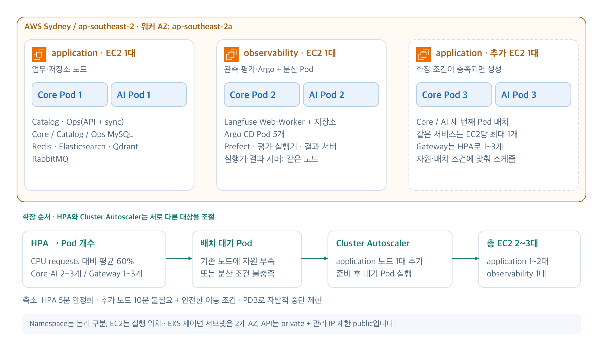
- 실행 위치: 업무·저장소와 관측·평가 구성 요소를 나누어 배치합니다.
- Pod 분산: Core·AI Pod를 여러 서버에 나누어 배치합니다.
- HPA: 부하에 따라 Pod 수를 조절합니다.
- 노드 확장: 실행 자원이 부족할 때 서버를 추가해 자원을 확보합니다.
노드·확장 설정 펼쳐 보기
| 구성 요소 | 세부 설정·역할 |
|---|---|
| application · EC2 1대 | 업무·저장소 노드 · Core Pod 1 · AI Pod 1 · Catalog · Ops(API + sync) · Core / Catalog / Ops MySQL · Redis · Elasticsearch · Qdrant · RabbitMQ |
| observability · EC2 1대 | 관측·평가·Argo + 분산 Pod · Core Pod 2 · AI Pod 2 · Langfuse Web·Worker·저장소 · Argo CD Pod 5개 · Prefect · 평가 실행기 · 결과 서버 |
| HPA → Pod 개수 조절 | CPU requests 대비 평균 60% · Core·AI: 2~3개 / Gateway: 1~3개 |
| 배치 대기 Pod | 자원이 부족하거나 분산 조건을 만족하지 못함 |
| application · EC2 1대 추가 | Core Pod 3 · AI Pod 3 배치 · 같은 서비스는 EC2당 최대 1개 · 자원·배치 조건에 맞춰 스케줄 · 전체 EC2: 기본 2대 · 최대 3대 |
| 안전하게 줄이는 조건 | HPA: 5분 안정화 · 추가 노드: 10분 불필요 + 안전한 이동 조건 · PDB: 자발적 중단 제한 |
평가 실행기와 결과 서버는 같은 노드에 배치합니다. Namespace는 논리 구분이고 EC2는 실행 위치입니다.
외부 통신·저장소 — 외부 API와 영속 데이터
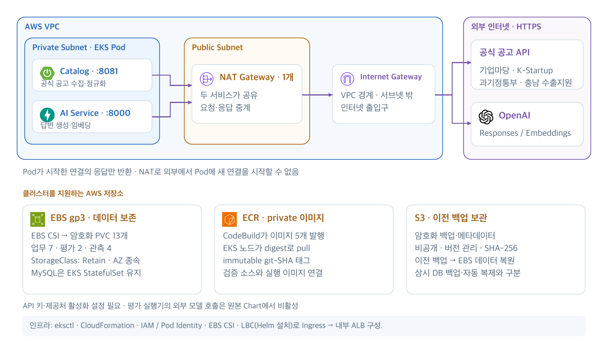
- 외부 API: 비공개 네트워크의 Pod가 NAT Gateway를 통해 공고 API와 OpenAI에 요청합니다.
- EBS: 서비스 데이터를 볼륨에 보존합니다.
- ECR: 실행 이미지를 보관합니다.
- S3: 이전 백업을 보관합니다.
외부 통신·저장소 설정 펼쳐 보기
| 구성 요소 | 세부 설정·역할 |
|---|---|
| Private Subnet · EKS Pod | Catalog :8081 → 공식 공고 수집·정규화 · AI Service :8000 → 답변 생성·임베딩 |
| NAT Gateway · 1개 | Public Subnet / 요청·응답 중계 |
| Internet Gateway | 서브넷 밖의 VPC 경계 · 인터넷 출입구 |
| 공식 공고 API | 기업마당 · K-Startup · 과기정통부 · 충남 수출지원 |
| OpenAI | Responses · Embeddings |
| EBS gp3 · 데이터 보존 | EBS CSI → 암호화 PVC 13개 · 업무 7 · 평가 2 · 관측 4 · StorageClass: Retain · AZ 종속 · MySQL은 EKS StatefulSet 유지 |
| ECR · private 이미지 | CodeBuild가 이미지 5개 발행 · EKS 노드가 digest로 pull · immutable git-SHA 태그 · 검증 소스와 실행 이미지 연결 |
| S3 · 이전 백업 보관 | 암호화 백업·메타데이터 · 비공개 · 버전 관리 · SHA-256 · 이전 백업 → EBS 데이터 복원 · 상시 DB 백업·자동 복제와 구분 |
Pod가 시작한 연결의 응답만 반환합니다. NAT를 통해 외부에서 Pod로 새 연결을 시작할 수 없습니다.
API 키·제공처 활성화 설정이 필요합니다. 평가 실행기의 외부 모델 호출은 원본 Chart에서 비활성입니다.
빌드·발행 — 코드에서 이미지와 배포 파일까지
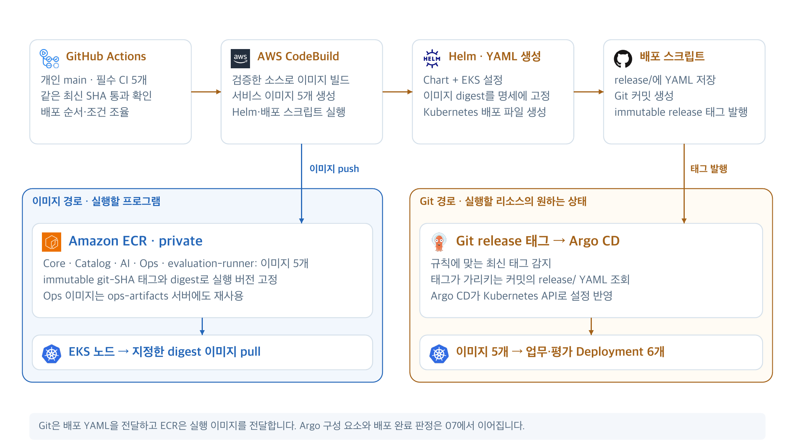
- CI 검증: 동일한 소스 커밋의 필수 CI를 확인합니다.
- 이미지 발행: 이미지를 빌드해 ECR에 발행합니다.
- 배포 설정: Helm으로 배포 파일을 만들고 이미지 digest를 고정합니다.
- 버전 관리: Git의 release 경로와 태그로 배포 상태를 관리합니다.
빌드·발행 설정 펼쳐 보기
| 구성 요소 | 세부 설정·역할 |
|---|---|
| GitHub Actions | 개인 main · 필수 CI 5개 · 같은 최신 SHA 통과 확인 · 배포 순서·조건 조율 |
| AWS CodeBuild | 서비스 이미지 5개 빌드 · Helm·배포 스크립트 실행 |
| 이미지 경로 | 실행할 프로그램 |
| Git 경로 | 원하는 리소스 상태 |
| Amazon ECR · private | Core · Catalog · AI · Ops · evaluation-runner · immutable git-SHA 태그 · digest로 실행 버전 고정 · Ops 이미지는 결과 서버에도 재사용 |
| Helm · YAML 생성 | Chart + EKS 설정 · 이미지 digest를 명세에 고정 · Kubernetes 배포 파일 생성 |
| EKS 노드 | ECR → 지정한 digest의 · 실행 이미지 pull |
| 배포 스크립트 | release/에 YAML 저장 · Git 커밋 생성 · immutable release 태그 발행 |
| 실제 실행 대상 | 이미지 5개를 사용해 · 업무·평가 Deployment 6개 실행 |
| Git 태그 → Argo CD | 규칙에 맞는 최신 태그 감지 · 태그 커밋의 release/ YAML 조회 · Kubernetes API로 설정 반영 |
GitOps 배포 — 변경 반영과 실행 상태 검증
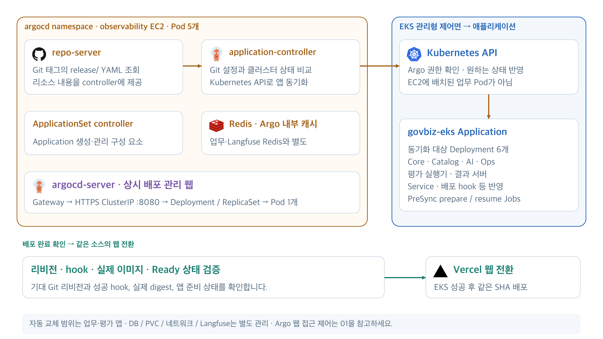
- 배포 반영: Argo CD가 Git의 배포 설정과 클러스터 상태를 비교해 Kubernetes API에 반영합니다.
- 배포 검증: Git 리비전·hook·이미지 digest·Ready 상태를 확인합니다.
- 웹 전환: 검증 후 웹도 같은 소스 버전으로 전환합니다.
Argo·배포 검증 설정 펼쳐 보기
| 구성 요소 | 세부 설정·역할 |
|---|---|
| repo-server | Git 태그의 release/ YAML 조회 · 리소스 내용을 controller에 제공 |
| application-controller | Git 설정과 클러스터 상태 비교 · Kubernetes API로 앱 동기화 |
| Kubernetes API | Argo 권한 확인 · 원하는 상태 반영 · EC2에 배치된 업무 Pod가 아님 |
| govbiz-eks Application | 동기화 대상 Deployment 6개 · Core · Catalog · AI · Ops · 평가 실행기 · 결과 서버 · Service · 배포 hook 등 반영 · PreSync prepare / resume Jobs |
| ApplicationSet controller | Application 생성·관리 |
| Redis · Argo 내부 캐시 | 업무·Langfuse Redis와 별도 |
| argocd-server · 상시 배포 관리 웹 | Gateway → HTTPS ClusterIP :8080 · → Deployment / ReplicaSet → Pod 1개 |
| 리비전·hook·이미지·Ready 검증 | 기대 Git 리비전 · 성공한 hook · 실제 image digest · 앱 준비 상태 확인 |
| Vercel 웹 전환 | 같은 소스 SHA로 배포 |

3. 사용자 의도를 분석해 업무 기능을 연결하는 LLM 기반 라우팅과 Human-in-the-loop를 설계·구현.
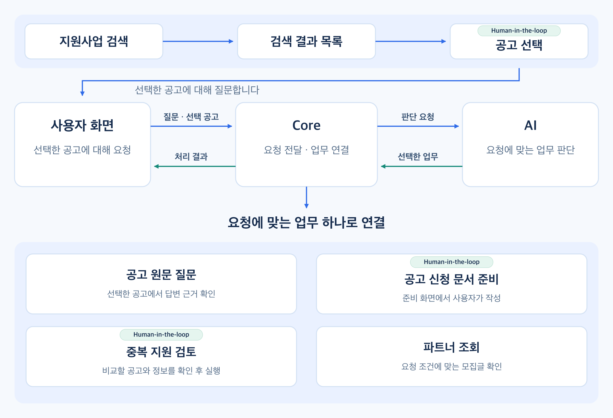
공고 선택: 사용자가 지원사업 검색 결과에서 작업할 공고를 선택합니다.
업무 판단: Core가 질문과 검색 문맥을 AI에 전달하면, AI가 요청에 맞는 업무 경로 하나를 선택합니다.
기능 연결: Core는 공고 선택 여부와 업무별 조건을 확인하고 원문 질문·신청 문서 준비·중복 지원 검토·파트너 조회 중 적절한 기능으로 연결하거나 안내합니다.
Human-in-the-loop: 사용자가 공고를 선택하고 신청 준비나 중복 검토에 필요한 내용을 확인하며 후속 작업을 직접 진행합니다.
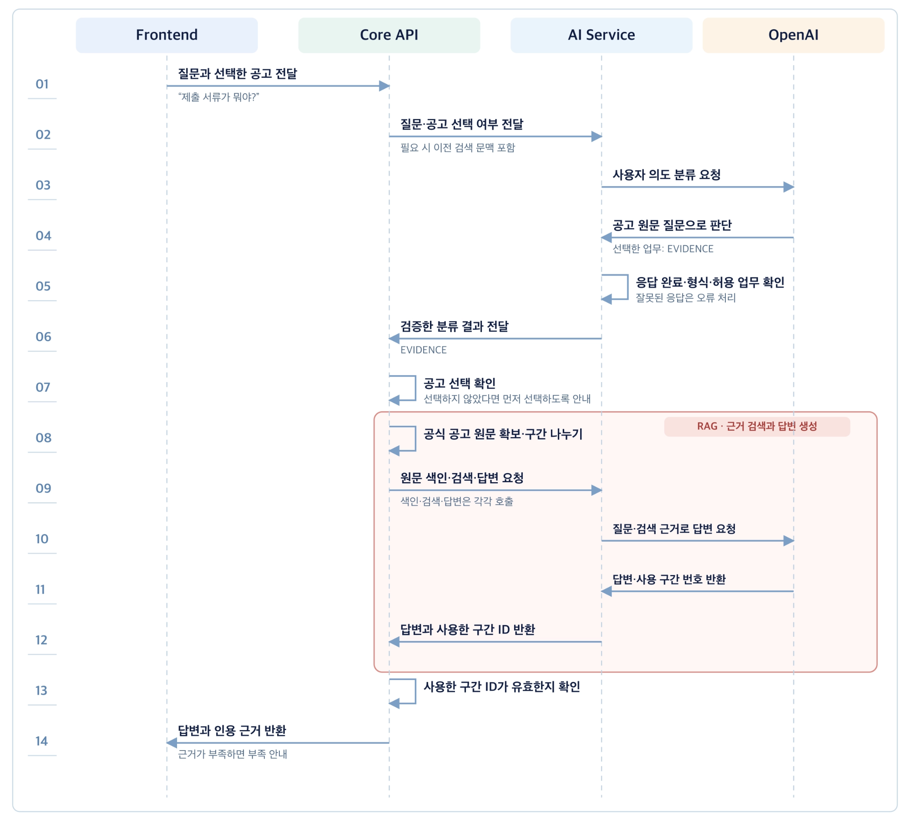
- 질문 전달: 사용자가 선택한 공고와 질문을 Core에 전달하면, Core는 질문과 공고 선택 여부를 AI에 보냅니다.
- 업무 선택: AI는 요청을 공고 원문 질문(
EVIDENCE)으로 분류하고, 응답 형식과 허용된 업무 값이 맞는지 확인합니다. - 공고 확인: Core는 공고가 선택되어 있으면 원문 답변 기능을 실행하고, 선택되지 않았다면 먼저 선택하도록 안내합니다.
- 답변과 근거: 공고 원문을 검색해 답변을 생성하고, Core가 사용한 구간 ID를 확인한 뒤 답변과 근거 또는 근거 부족 안내를 반환합니다.
- RAG 과정 상세보기 : https://ilil1.github.io/ilil1/ai/project/skn34_3th/#section-3-2
4. Ops-service 운영 API와 Langfuse·Prefect를 연동해 LLM 응답 품질 평가·추적·실행 관리 체계인 LLMOps를 구축.
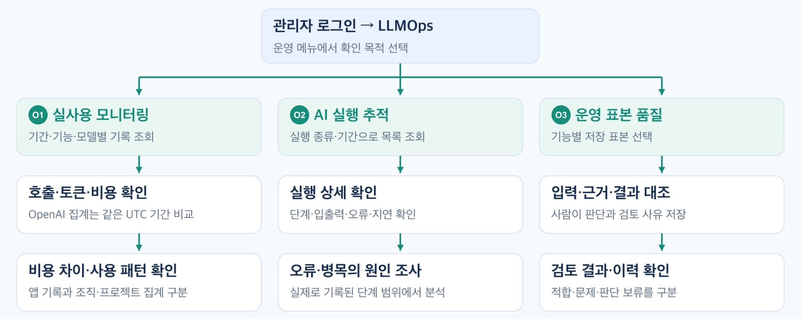
- O1 실사용 모니터링: AI 호출 횟수·토큰 사용량·토큰 사용 비용을 확인합니다.
- O2 AI 실행 추적: 기록된 실행 단계·입출력·오류를 살펴봅니다.
- O3 운영 표본 품질: 저장된 응답 표본을 사람이 검토합니다.
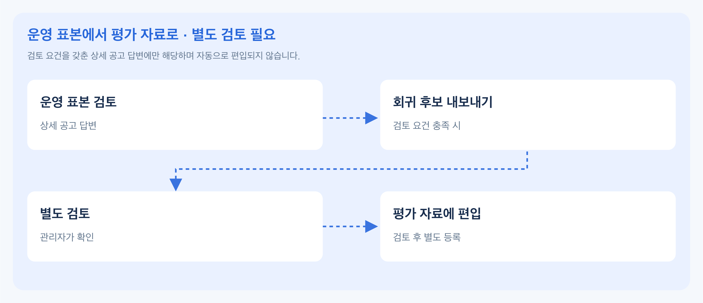
운영 표본 활용: 검토 요건을 갖춘 상세 공고 답변은 회귀 후보로 내보낼 수 있습니다. 추가 검토 후 별도로 평가 자료에 등록하며 자동으로 편입되지는 않습니다.
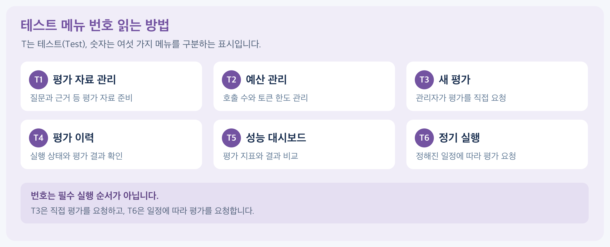
- T1~T5: 평가 자료와 예산 준비부터 평가 실행, 결과 확인과 비교까지의 흐름을 기준으로 번호를 배치했습니다.
- T6: T6 정기 실행은 T5 다음에 진행하는 마지막 단계가 아니라, 관리자가 직접 실행하는 T3과 별도로 평가를 요청하는 방법입니다. 두 경로 모두 이후 공통 접수와 평가 실행으로 이어집니다.
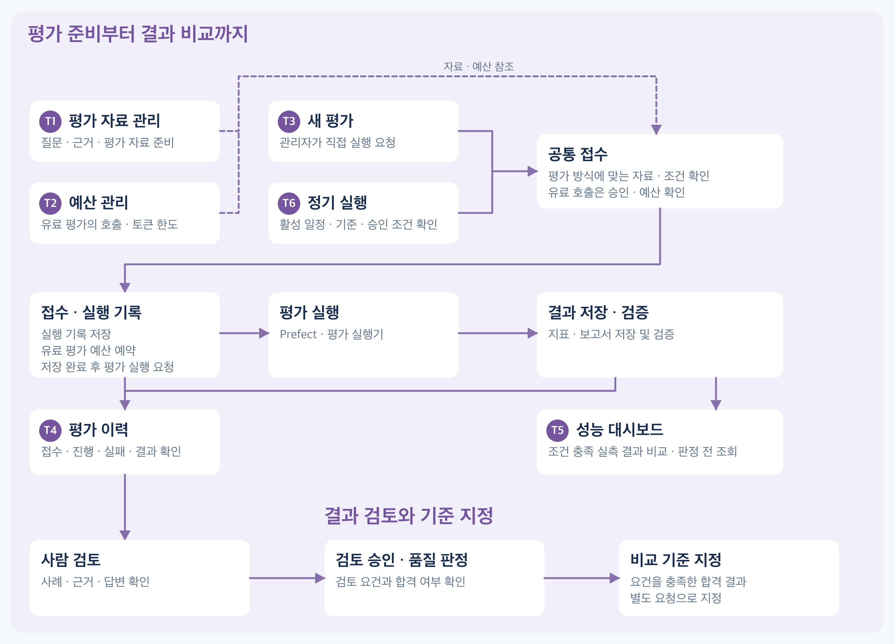
- T1 평가 자료 관리: 평가에 사용할 질문·근거·조건을 준비합니다.
- T2 예산 관리: 평가에 사용할 호출과 토큰 한도를 확인합니다.
- T3 새 평가: 자료와 모델을 선택해 평가를 접수합니다.
- T4 평가 이력: 실행 결과를 확인하고 답변을 검토합니다.
- T5 성능 대시보드: 저장된 평가 결과를 같은 조건으로 비교합니다.
- T6 정기 실행: 활성화·승인·조건 확인 후 일정에 따라 평가를 접수합니다.
- 평가 실행과 검토 단계
- 접수·실행 기록: ops-service가 실행 요청을 기록하고, 유료 평가의 사용량을 예약한 뒤 평가 실행을 요청합니다. 접수·진행·실패 상태는 평가 이력에서 확인합니다.
- 평가 실행: Prefect가 실행을 관리하고 평가 실행기가 선택한 자료와 방식에 따라 지표와 보고서를 만듭니다.
- 결과 저장·검증: 실행기가 결과 파일을 저장하면 Ops가 완료된 결과를 읽고 검증해 요약과 비교 결과를 기록합니다.
- 비교 기준 지정: 현재 유효한 합격 결과 중 추가 요건을 충족한 실행을 관리자가 별도로 비교 기준으로 지정합니다.
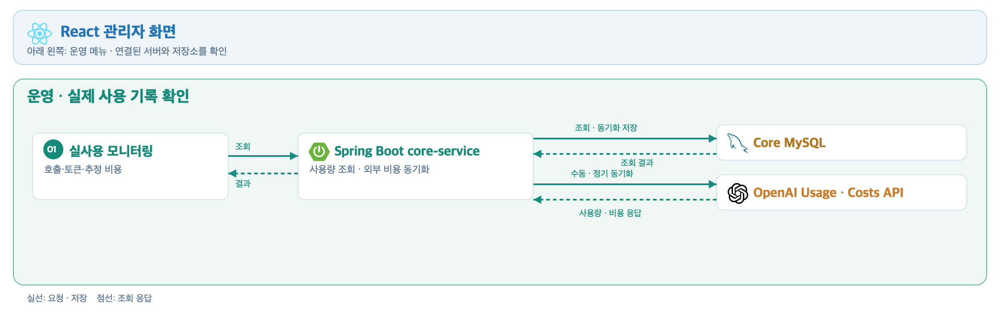
- 실사용 모니터링: Core MySQL에 기록된 호출·토큰·추정 비용과 OpenAI Usage·Costs API에서 가져온 사용량·비용을 같은 기간 기준으로 확인합니다.
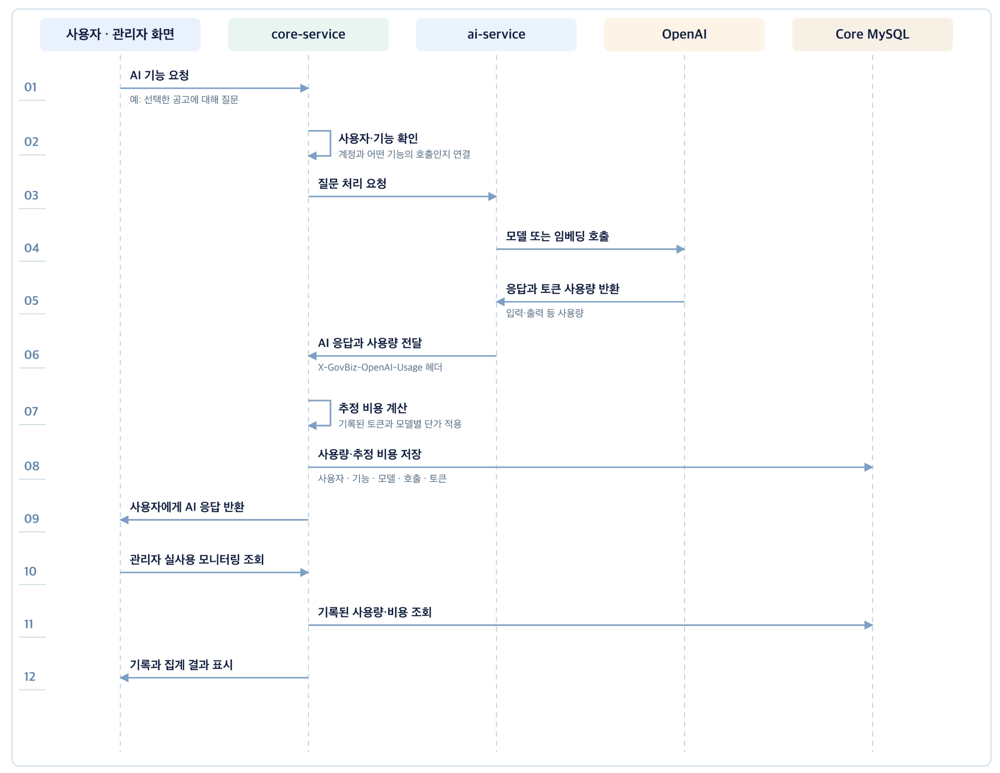
- 사용자·기능 확인: core-service가 요청한 사용자와 어떤 기능인지 연결합니다.
- 사용량 수집: ai-service가 OpenAI 응답의 토큰 사용량을 수집해 core-service에 전달합니다.
- 추정 비용 기록: core-service가 모델별 단가를 적용해 사용량·추정 비용을 MySQL에 저장합니다.
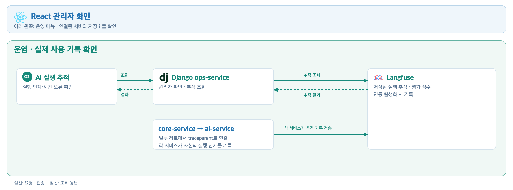
- O2 AI 실행 추적: 설정된 core-service와 ai-service가 계측된 실행 단계·시간·오류 등의 추적 기록을 Langfuse에 전송합니다. 관리자가 화면에서 추적을 조회하면, ops-service가 Langfuse API에서 기록을 가져와 화면에 전달합니다. 일부 호출은 traceparent를 전달해 Core와 AI의 추적을 연결합니다.
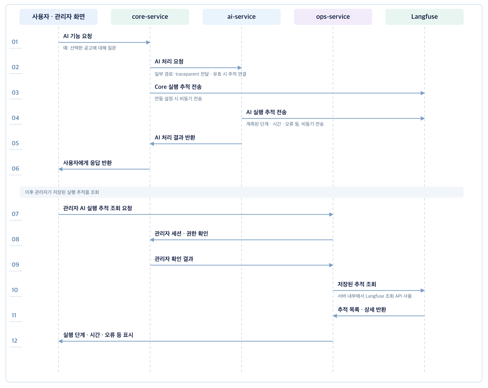
- 추적 기록: 연동 설정이 활성화되면 core-service와 ai-service가 계측된 실행 기록을 Langfuse로 전송합니다. 일부 호출은 traceparent를 전달해 Core와 AI의 추적을 연결합니다.
- 관리자 확인: ops-service는 core-service에서 관리자 권한을 확인한 뒤 Langfuse의 추적을 조회 API 를 사용해서 읽어 화면에 전달합니다.
- 기록 범위: 추적은 Langfuse에 보관하며 ops-service DB에 복제하지 않습니다. 계측된 기능만 기록되며 질문·답변 원문이 항상 포함되지는 않습니다.
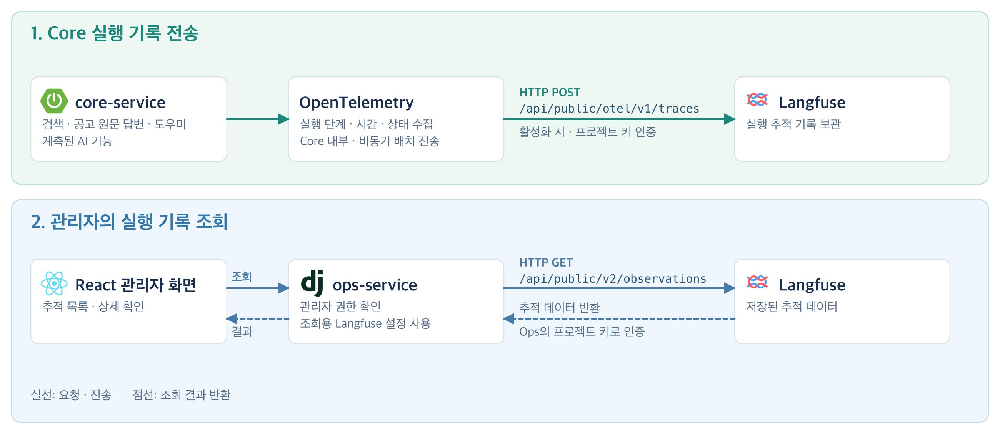
- 추적 생성: core-service가 지원사업 검색·공고 원문 답변·AI 도우미의 계측된 실행 단계와 시간·성공 여부를 기록합니다.
- 전송: 연동이 활성화되면 OpenTelemetry가 기록을 모아 Langfuse의
POST /api/public/otel/v1/traces로 비동기 전송합니다. Langfuse 프로젝트 키로 인증합니다. - 조회: 관리자가 화면에서 조회하면 ops-service가 Langfuse의
/api/public/v2/observations에서 기록을 읽어 전달합니다. 기록 전송과 관리자 조회는 별도 경로입니다. - 구현 근거
- Core 추적 설정: OpenTelemetry 전송기를 설정해 기록한 추적을 Langfuse로 전송합니다.
- 업무별 추적 적용: 공고 조회·원문 확보·구간 준비를
tracing.observe(...)로 감쌉니다. - 직접 구현한 observe: 프로젝트의 Helper가 OpenTelemetry
Tracer로 추적 구간의 시작·종료와 성공·오류 상태를 기록합니다. - Core→AI 추적 연결: 내부 HTTP 요청에 현재 추적의
traceparent를 전달합니다. - Ops 추적 조회: Ops가 Langfuse API에서 저장된 추적을 조회해 관리자 화면에 전달합니다.
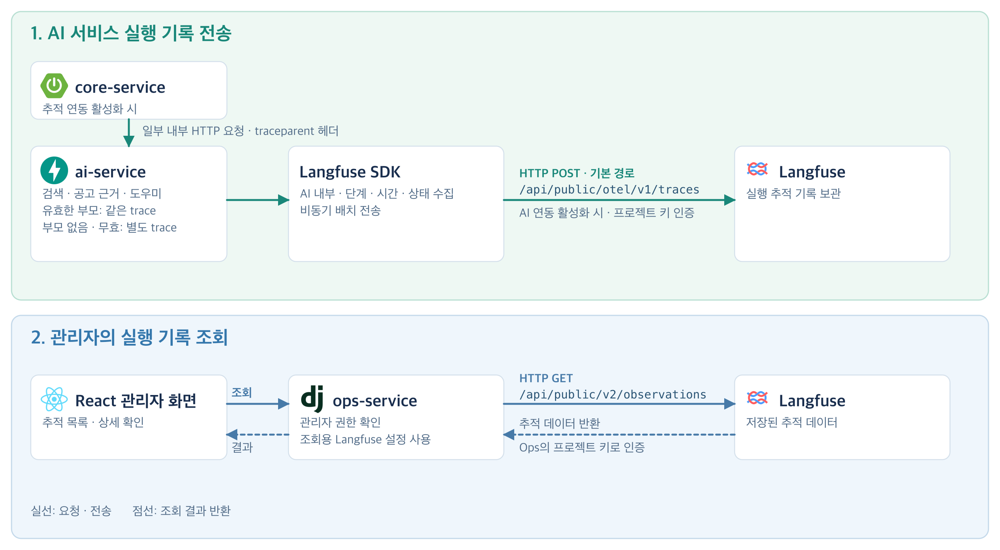
- 추적 생성: AI 서비스가 검색·공고 근거 답변·도우미 등 계측된 기능의 실행 단계와 시간·상태를 기록합니다. 모델 이름과 사용량이 제공된 경우 토큰 수도 기록할 수 있습니다.
- 전송: 연동이 활성화되면 Langfuse Python SDK가 추적 기록을 모아 비동기로 전송합니다. 기본 경로는
POST /api/public/otel/v1/traces이며, 설정에 따라 경로를 변경할 수 있습니다. - core-service와 연결: 일부 경로에서는 core-service가 보낸 유효한
traceparent를 이어받아 같은 요청의 추적에 연결합니다. 유효한 부모 정보가 없으면 별도 추적으로 시작합니다. - 조회와 기록 범위: 관리자가 조회하면 ops-service가 Langfuse API에서 기록을 가져옵니다. AI 추적에는 질문·답변·문서 본문을 넣지 않도록 처리하며, 실행 기록과 평가 점수 등록은 별개입니다.
- 구현 근거
- AI 추적 설정: Langfuse 연동 활성화 여부와 서버 주소·프로젝트 키 등 환경 설정을 읽고 검증합니다.
- Langfuse SDK와 관측 구간:
LLMTracing이 SDK를 초기화하고observation구간을 생성합니다. - AI 답변 추적 적용:
evidence.answer구간을 열어 답변 작업과 검증 상태를 기록합니다. - 모델 호출과 사용량:
evidence.model로 모델 호출을 감싸고 제공된 경우 토큰 사용량을 기록합니다. - Core 추적 이어받기: 내부 HTTP 요청의
traceparent를 읽어 상위 추적과 연결합니다.
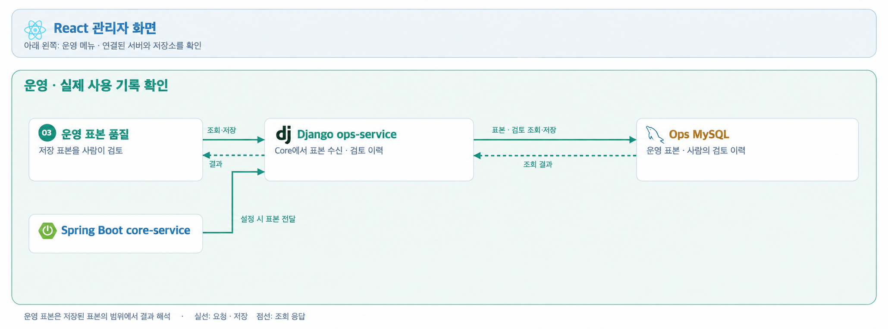
- Core → Ops 표본 전달: 설정된 수집 조건에 맞는 성공 응답 일부를 core-service가 선별해 ops-service로 비동기 전달합니다.
- Ops의 저장과 조회: ops-service는 전달받은 운영 표본을 Ops MySQL에 저장하고, 관리자 화면에서 조회를 요청하면 저장된 표본을 가져와 보여줍니다.
- 관리자의 검토: 관리자는 운영 표본 품질 화면에서 질문·근거·결과를 살펴보고 검토 판단과 사유를 기록합니다. 검토 이력도 Ops MySQL에 저장됩니다.
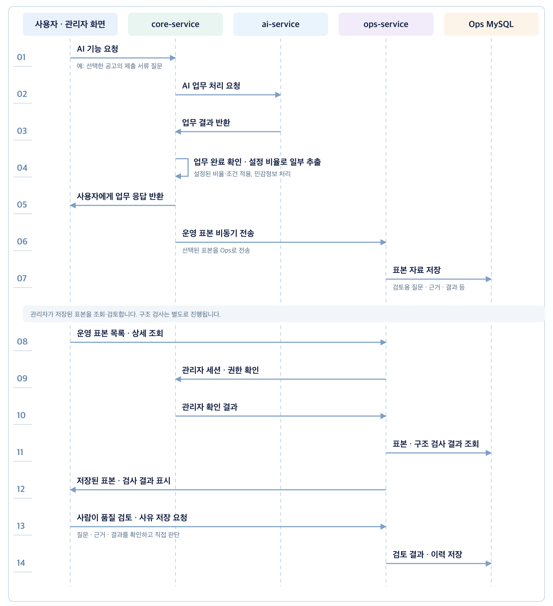
- 표본 수집: core-service는 설정된 조건에 맞는 성공 사례 일부를 선별해 ops-service에 비동기로 전달합니다. 이후 Ops MySQL에 표본을 저장합니다.
- 사람 검토: 관리자가 질문·근거·결과를 확인하고 검토 결과와 사유를 저장합니다.
- 회귀 후보: 요건을 갖춘 상세 공고 답변은 회귀 후보로 내보낼 수 있으며, 평가 자료에 넣으려면 별도 검토와 등록이 필요합니다.
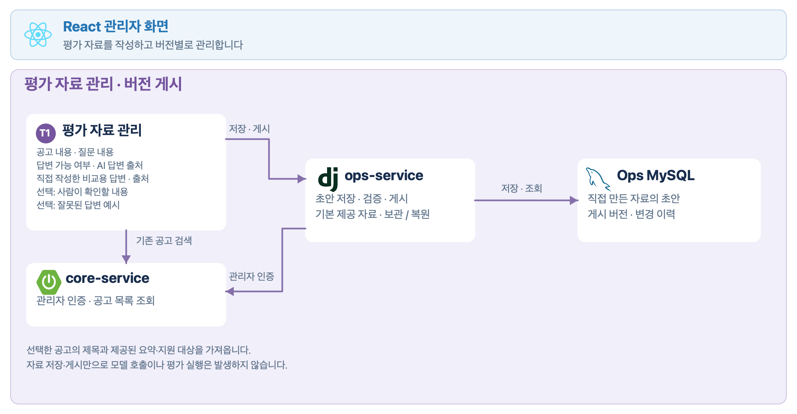
- 자료 작성과 저장: 관리자가 공고 내용과 질문을 입력하고, 답변 가능 여부와 AI 답변의 출처를 설정한 뒤 비교용 답변을 작성합니다. 필요한 경우 사람이 확인할 내용과 잘못된 답변 예시도 추가할 수 있습니다. ops-service는 자료를 검증해 초안과 게시 버전을 Ops MySQL에 저장합니다.
- 관리자 인증: ops-service는 core-service에 요청해 현재 관리자 세션과 권한을 확인합니다.
- 기존 공고 검색: 관리자는 core-service에서 공고를 검색해 제목과 제공된 요약·지원 대상을 가져올 수 있습니다. 필요한 원문 근거는 직접 확인하고 보완합니다.
- 평가 자료 활용: 기본 제공 자료 또는 직접 만든 자료의 게시 버전을 새 평가에서 선택할 수 있습니다.
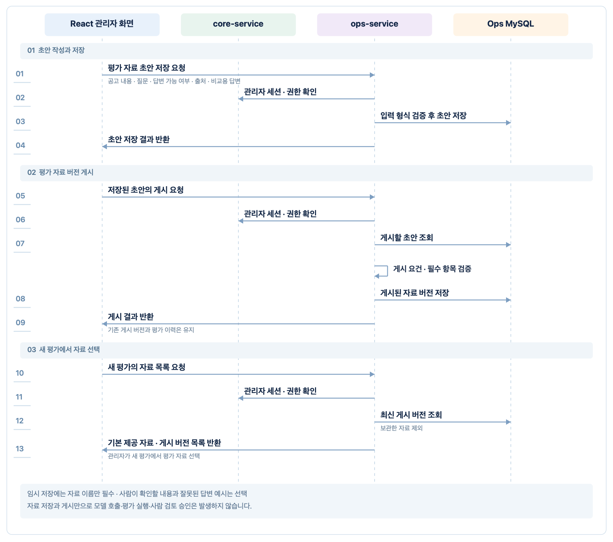
- 01 초안 작성과 저장: 관리자는 자료 이름을 입력해 초안을 임시 저장할 수 있습니다. 공고 내용·질문·답변 가능 여부·출처·비교용 답변을 작성하며, 사람이 확인할 내용과 잘못된 답변 예시는 선택해 추가합니다. ops-service는 core-service에서 관리자 권한을 확인하고 입력 형식을 검증한 뒤 초안을 Ops MySQL에 저장합니다.
- 02 평가 자료 버전 게시: 관리자가 저장된 초안의 게시를 요청하면 ops-service가 관리자 권한과 게시 요건을 확인합니다. 검증을 통과한 자료는 별도 버전으로 저장하며, 이전 게시 버전과 평가 이력은 유지됩니다.
- 03 새 평가에서 자료 선택: 관리자가 새 평가 화면을 열면 ops-service가 기본 제공 자료와 보관되지 않은 자료의 최신 게시 버전을 목록으로 제공합니다.
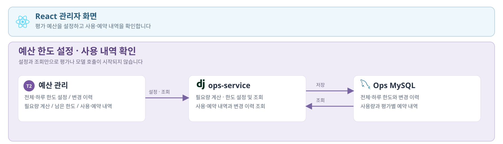
- 전체 사용 한도: 관리자가 AI 요청 횟수와 입력·출력 토큰의 누적 한도를 설정합니다. 날짜가 바뀌어도 유지되며, 확인된 사용량과 아직 정리되지 않은 예약을 함께 고려해 남은 한도를 보여줍니다.
- 하루 평가 한도: 필요할 때 서울 시간 자정을 기준으로 하루 한도를 별도로 설정할 수 있습니다. 하루 한도를 적용해도 전체 한도는 함께 확인합니다.
- 평가 필요량 확인: 평가 자료·모델·횟수를 선택하면 실행에 필요한 최대 요청 횟수와 토큰 양을 계산합니다. 계산한 값을 한도 입력에 활용하거나 직접 입력할 수 있으며, 이 단계에서 평가나 모델 호출이 실행되지는 않습니다.
- 사용·예약 내역: ops-service가 Ops MySQL의 장부를 조회해 사용·예약 합계, 평가별 예약 상태와 한도 변경 이력을 보여줍니다. 표시되는 한도와 사용량은 실제 청구 금액이 아닙니다.
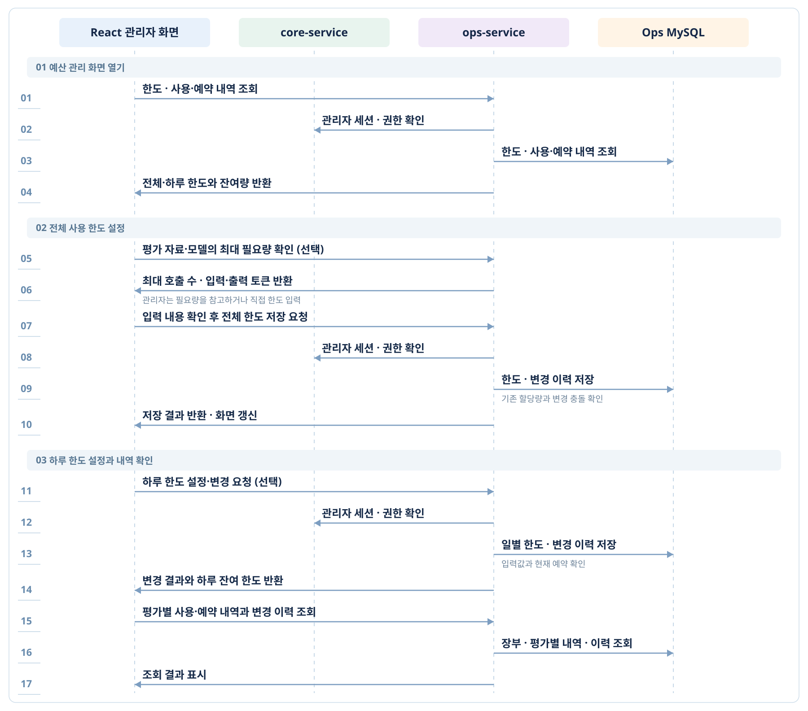
• 01 예산 관리 화면 열기: Ops MySQL에서 전체·하루 한도와 사용·예약 내역을 조회해 표시합니다.
• 02 전체 사용 한도 설정: 관리자는 평가 자료와 모델의 최대 필요량을 참고하거나 직접 호출 수와 입력·출력 토큰 한도를 입력합니다. ops-service가 기존 할당량과 변경 충돌을 확인한 뒤 한도와 변경 이력을 저장합니다.
• 03 하루 한도 설정과 내역 확인: 관리자는 하루 한도를 설정하거나 변경하고, 평가별 사용·예약 내역과 한도 변경 이력을 확인합니다. ops-service는 입력값과 현재 예약을 확인해 저장하고 결과를 화면에 반환합니다.
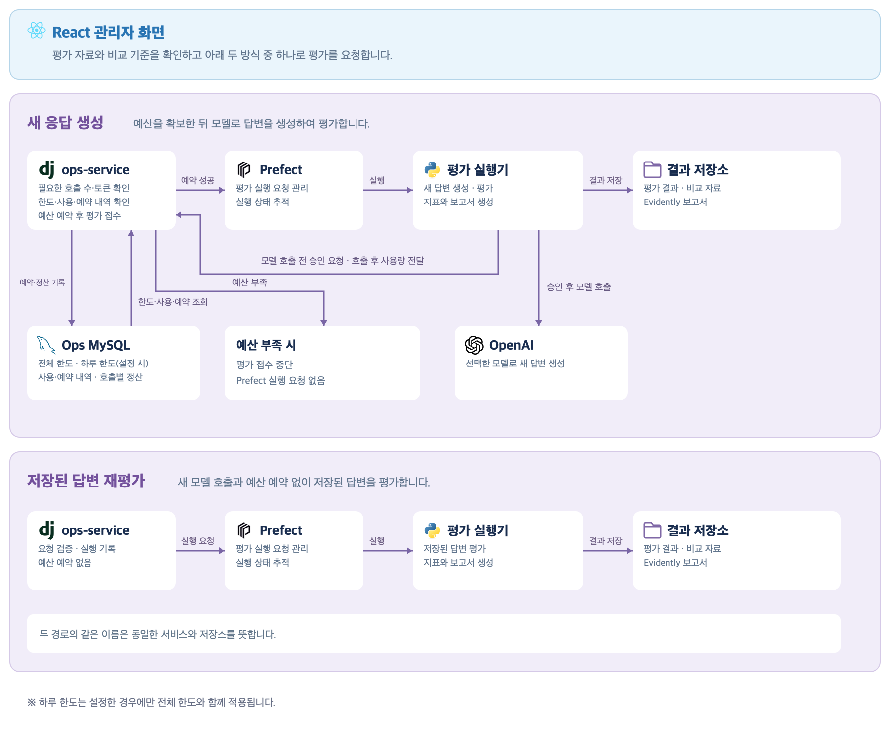
- 평가 준비와 접수: 관리자는 평가 자료를 선택하고, 저장된 답변을 다시 확인할지 새 응답을 생성할지 확인합니다. 이후 비교할 답변을 선택하며, 새 응답을 생성할 때는 모델과 전송 자료·최대 호출 예산을 확인하고 동의한 뒤 평가를 실행합니다.
- 예산 확인과 예약: 새 응답 생성 요청을 받은 ops-service는 전체 한도와 설정된 하루 한도, 사용·예약 내역을 확인해 필요한 호출 수와 토큰을 예약합니다. 예약이 성공해야 Prefect에 실행을 요청하며, 실패하면 평가 접수를 중단합니다. 저장된 답변을 다시 확인하는 평가는 새 모델 호출과 예산 예약 없이 실행합니다.
- 호출 승인과 정산: 새 응답을 생성할 때 평가 실행기는 모델 호출마다 ops-service에 승인을 요청합니다. ops-service는 예약 조건과 모델·호출 순서·취소 여부 등을 확인해 승인하거나 거절합니다. 승인이 거절되거나 확인되지 않으면 해당 모델 호출을 막고 평가를 중단합니다. 호출 후 확인된 사용량은 정산합니다.
- 평가 실행과 결과 저장: ops-service가 Prefect에 실행을 요청하면 평가 실행기가 선택한 방식으로 답변을 평가하고 지표와 보고서를 생성합니다. 결과 파일은 결과 저장소에 보관하고 실행 상태와 결과 요약은 동기화하여 확인할 수 있습니다.
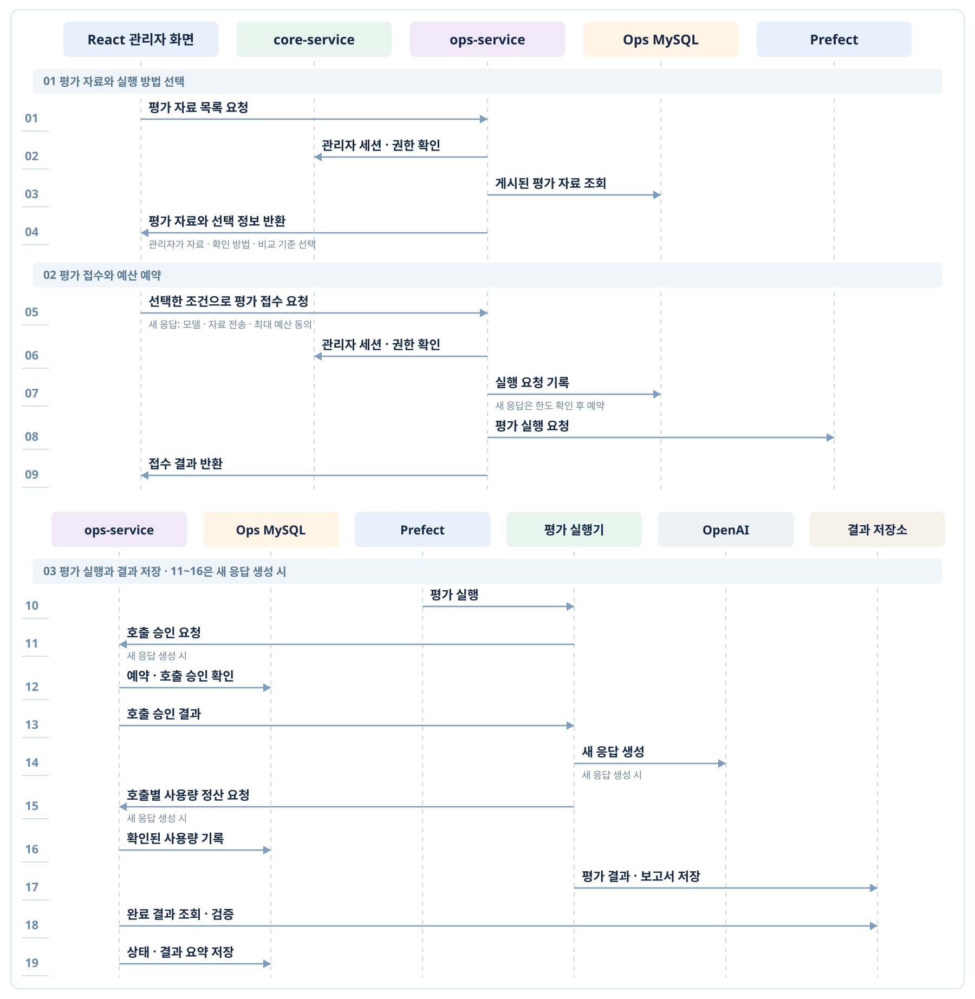
- 01 평가 자료와 실행 방법 선택: 관리자 화면이 평가 자료 목록을 요청하면 ops-service가 관리자 권한을 확인하고 선택할 수 있는 자료를 제공합니다. 관리자는 평가 자료, 답변 확인 방법과 비교 기준을 선택합니다.
- 02 평가 접수와 예산 예약: 관리자가 선택한 조건으로 평가를 요청하면 ops-service가 요청을 검증하고 실행 기록을 저장한 뒤 Prefect에 실행을 요청합니다. 새 응답 생성인 경우 전체·하루 예산 한도를 확인하고 필요한 호출 수와 토큰을 예약합니다.
- 03 평가 실행과 결과 저장: 평가 실행기가 선택한 방식으로 평가하고 결과와 보고서를 저장합니다. 새 응답을 생성할 때는 모델 호출 전 승인을 요청하고, 호출 후 확인된 사용량을 정산합니다. ops-service는 완료된 결과를 확인해 실행 상태와 결과 요약을 저장합니다. 저장된 답변을 다시 확인하는 경우 모델 호출과 예산 예약은 발생하지 않습니다.
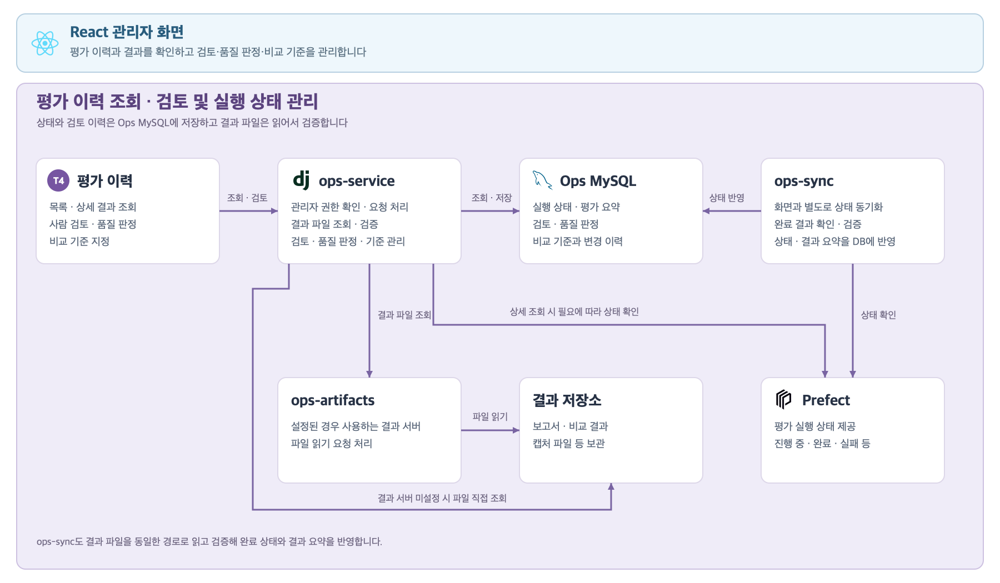
- 평가 이력 조회: 관리자 화면에서 평가 목록이나 상세 결과를 요청하면 ops-service가 관리자 권한을 확인하고, Ops MySQL에 저장된 실행 상태와 평가 요약을 조회합니다.
- 실행 상태 동기화: ops-sync가 화면과 별도로 Prefect의 실행 상태를 주기적으로 확인하고, 확인된 상태와 결과 요약을 Ops MySQL에 반영합니다. 상세 조회 시에도 ops-service가 필요에 따라 상태를 확인합니다.
- 결과 파일 확인: ops-service와 ops-sync는 설정에 따라 ops-artifacts를 거치거나 결과 저장소에서 파일을 직접 읽습니다. 결과 파일을 검증한 뒤 완료 상태와 요약을 반영합니다. 관리자가 보고서나 검토 자료를 요청하면 ops-service가 이를 제공합니다.
- 검토와 비교 기준 관리: 관리자는 평가 결과와 근거를 검토하고 품질 판정을 요청할 수 있습니다. 검토와 판정 이력은 Ops MySQL에 저장되며, 조건을 충족한 결과를 비교 기준으로 지정하거나 해제할 수 있습니다.
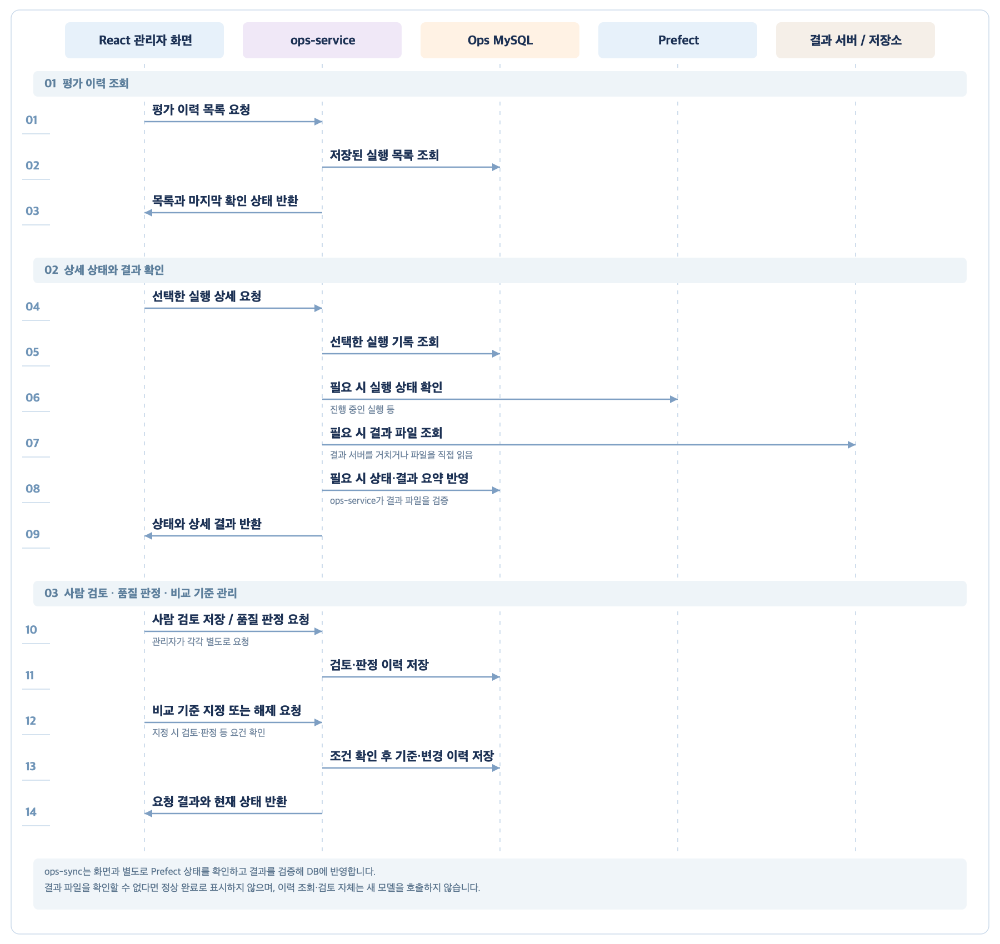
- 01 평가 이력 조회: 관리자 화면이 목록을 요청하면 ops-service가 Ops MySQL에 저장된 실행 기록과 마지막으로 확인된 상태를 반환합니다.
- 02 상세 상태와 결과 확인: 실행을 선택하면 ops-service가 저장된 기록을 읽고, 필요 시 Prefect 상태와 결과 파일을 확인합니다. 결과를 검증한 뒤 필요한 상태와 요약을 DB에 반영합니다. ops-sync도 화면과 별도로 상태를 확인합니다.
- 03 검토와 품질 판정: 관리자가 결과를 확인하고 사람 검토를 저장하거나 품질 판정을 요청하면, ops-service가 각각의 결과와 이력을 DB에 저장합니다.
- 04 비교 기준 관리: 관리자가 기준 지정 또는 해제를 요청하면 ops-service가 필요한 조건을 확인하고 기준과 변경 이력을 저장한 뒤 결과를 반환합니다.
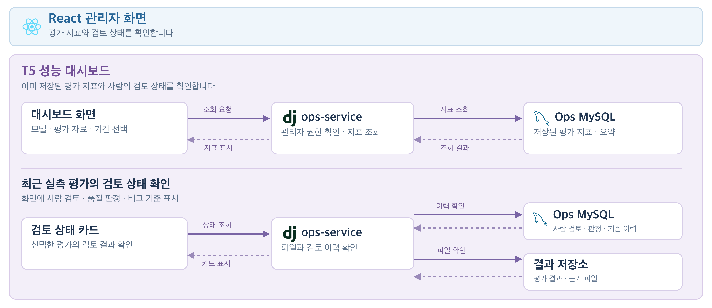
- T5 성능 대시보드 → Ops MySQL: 모델·평가 자료·기간을 선택하면 ops-service가 DB에 저장된 평가 요약을 읽어 답변 상태 일치율, 근거 인용 재현율, 지연 시간 등을 보여줍니다. 데이터가 없는 지표는 ‘미측정’으로 표시될 수 있으며, 조회만으로 새 평가를 실행하지 않습니다.
- ops-service → 결과 저장소: 대시보드의 최근 실측 평가에서 ‘사람 검토’, ‘품질 판정’, ‘활성 비교 기준’을 보여줄 때, ops-service가 결과·근거 파일과 DB의 검토 이력을 함께 확인합니다. 파일은 설정에 따라 ops-artifacts를 거치거나 직접 읽습니다.
예시: ‘평가 자료 관리’에서 ‘제출 서류가 무엇인가요?’라는 질문과 공고 근거를 저장합니다. 해당 자료의 실측 결과가 이미 있다면 ‘성능 대시보드’에서 지표와 검토 상태를 확인할 수 있습니다. 지표는 평가 자료 범위의 결과이며 서비스 전체의 정확도를 뜻하지 않습니다.
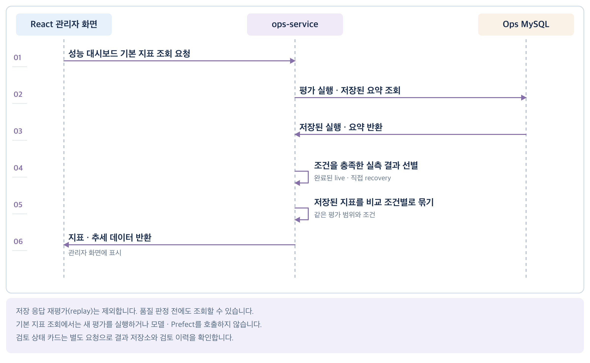
- 결과 조회: 관리자 화면이 대시보드를 요청하면 Ops가 DB에 저장된 평가 실행과 요약을 조회합니다.
- 비교 대상 선별: 비교 조건을 충족하는 완료된 실측 평가와 직접 복구 결과를 모아 지표·추이를 표시합니다. 저장 응답 재평가는 제외합니다.
- 조회와 검토: 대시보드는 품질 판정 전에도 조회할 수 있으며, 조회만으로 새 평가나 모델 호출은 발생하지 않습니다. 검토 상태 카드는 별도 요청으로 확인합니다.
- 평가 자료 관리 : 평가에 사용할 질문과 근거, 기대 조건을 등록하고 버전별로 관리합니다. 자료 등록만으로 모델이 호출되지는 않습니다.
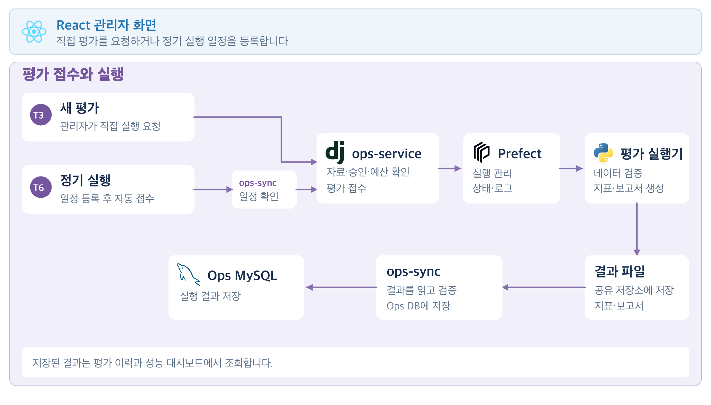
테스트 — 평가 실행과 결과 비교
- 새 평가 : Ops가 권한·자료·승인·예산을 확인하고 Prefect에 실행을 접수합니다. 평가 실행기는 pandas·Pandera로 데이터를 처리하고 지표와 Evidently 보고서를 만들며, 설정된 경우 Langfuse에 점수를 등록합니다.
- 정기 실행 : Ops가 평가 일정과 실행 조건을 관리합니다. 활성화된 일정이 도래하면 실행 조건과 예산을 확인해 Prefect에 평가를 접수합니다.
평가 방식: 저장된 응답의 재평가는 새 모델 호출 없이 실행할 수 있습니다. 새 답변을 생성하는 평가는 별도의 승인과 예산이 필요합니다.
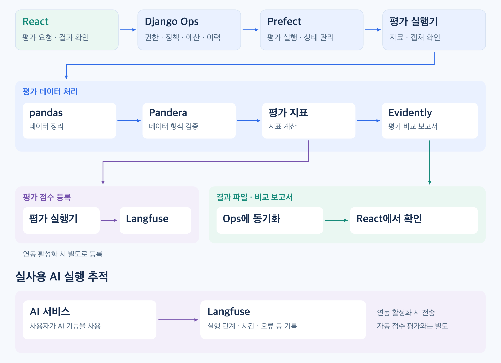
- 운영 관리: React는 운영 화면을 제공하고, Django Ops는 정책·권한·이력을 관리합니다.
- 평가 실행: Prefect가 별도 평가 실행을 관리합니다.
- 데이터 처리: pandas로 데이터를 정리하고 Pandera로 형식을 검증한 뒤 지표를 계산합니다.
- 실행 추적: Langfuse로 실행 중의 호출 기록을 수집·추적합니다.
- 평가 결과: Evidently로 결과를 비교하며, 보고서와 Langfuse 점수 등록은 별도로 처리합니다.
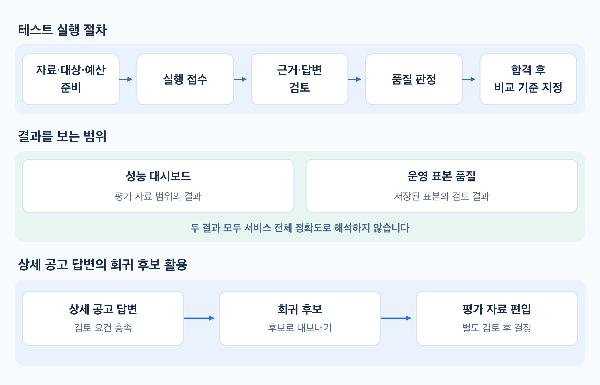
- 테스트 실행: 자료·대상·예산 준비 → 실행 접수 → 근거·답변 검토 → 품질 판정 → 합격 후 비교 기준 지정
- 성능 대시보드: 평가 자료 범위의 결과를 보여줍니다.
- 운영 표본 품질: 저장된 표본의 검토 결과를 보여줍니다.
- 결과 해석: 두 결과를 서비스 전체 정확도로 해석하지 않습니다.
- 회귀 후보: 검토 요건을 갖춘 상세 공고 답변을 후보로 내보낼 수 있으며, 평가 자료 편입은 별도 검토가 필요합니다.
구현 기준: 운영·테스트 메뉴 정의 · 운영 화면 기능·측정 범위
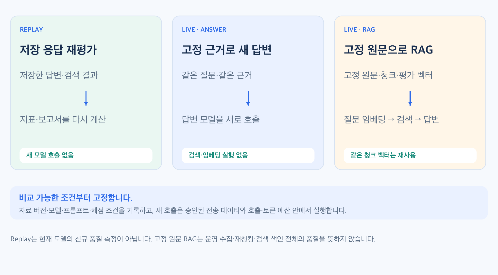
저장 응답 재평가는 당시 응답을 다시 분석합니다. 고정 근거 답변은 같은 근거에서 새 답변을, 고정 원문 RAG는 평가 자료 전용 검색과 새 답변을 비교합니다. 운영 원문 재수집·재청킹·운영 검색 색인 전체의 성능 측정과는 구분합니다.
구현 근거: Ops 운영 API · 평가 실행 흐름 · 분석·보고서·점수 등록 · 운영 화면 원본
5. 서비스를 AWS EKS 기반 Kubernetes 환경에 배포하고, Helm·Argo CD를 활용한 GitOps 배포 자동화를 초기부터 구축.
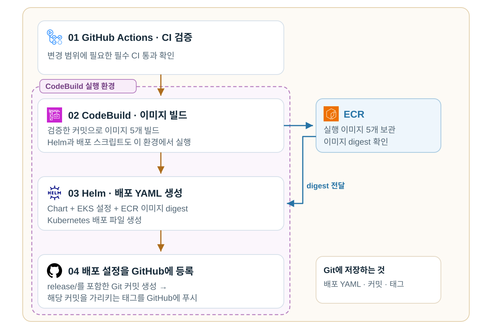
- 이미지 빌드·저장: CodeBuild가 ECR에서 검증된 커밋의 Core·Catalog·AI·Ops·평가 실행기 이미지 태그를 각각 조회합니다. 없는 이미지만 빌드해 ECR에 푸시한 뒤 digest를 조회합니다. 각 이미지의 저장소 주소와 digest는 CodeBuild의 임시 파일
release.json에 기록합니다. - 배포 YAML 생성: CodeBuild에서 실행되는 배포 스크립트가 Chart와 프로젝트 설정, 이미지 정보를 준비해 Kubernetes 배포 YAML을 만듭니다.
- Chart :
govbiz-serviceChart에는 Deployment·Service 등을 만드는 양식과 기본값이 들어 있습니다. Core·Catalog·AI·Ops에 같은 Chart를 사용하고, 서비스별 설정을 다르게 넣습니다. - EKS 설정 : 스크립트가 작성해 둔
infrastructure/eks/gitops-values.yaml과 서비스별 설정을 읽습니다. 예를 들어 Core의 Pod 자동 확장 범위와 CPU·메모리 요청량을 정합니다. - 이미지 digest : 앞 단계에서 만든
release.json에서 각 서비스의 ECR 이미지 주소와 digest를 읽습니다. 이렇게 해야 배포 YAML이 실행할 이미지의 정확한 버전을 가리킵니다. - 설정값 전달: 스크립트가 서비스별 설정과 이미지 정보를 합쳐 임시
values.yaml을 만들고,helm template의-f옵션으로 전달합니다. Helm은 Chart의 양식에 이 값을 채워Deployment·Service 등의 YAML을 생성합니다. - 생성 후 처리: 배포 스크립트가 노드 배치 조건과 소스 커밋 정보, 필요한 배포 hook 등을 보완합니다. 이 단계에서는 YAML을 생성·준비하며, EKS 반영은 이후 Argo CD가 수행합니다.
- Chart :
예를 들어 Core-service는 Chart의 공통 양식에 Core용 실행 설정과 Core 이미지 digest를 넣어 배포 YAML을 만듭니다. 평가 실행기와 결과 서버에는 별도의 govbiz-evaluation Chart를 사용합니다.
- Git 배포 태그 발행: Git 발행 직전 ECR의 digest를 다시 확인합니다. 배포 YAML을
release/경로로 포함하는 Git 커밋을 만들고, 해당 커밋을 가리키는 불변 태그를 GitHub에 푸시합니다.
구현 근거: EKS 배포 스크립트 · EKS 설정값 · 서비스 Helm Chart
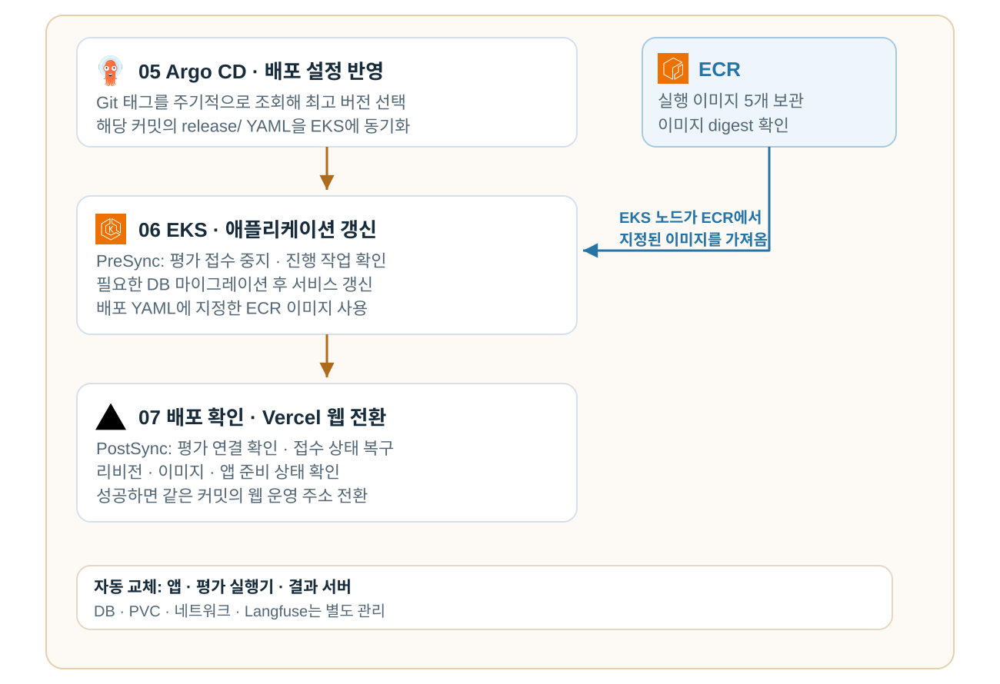
- Argo CD 동기화: Argo CD가 Git 태그를 주기적으로 확인해 규칙에 맞는 가장 높은 버전을 선택하고, 해당 커밋의 배포 YAML을 EKS에 반영합니다.
- EKS 서비스 갱신: 배포 전 PreSync에서 평가 접수를 중지하고 진행 중인 작업을 확인한 뒤 필요한 DB 마이그레이션을 수행합니다. 이후 EKS 노드가 YAML에 지정된 이미지를 ECR에서 가져와 애플리케이션을 갱신합니다. 배포 대상에는 Core·Catalog·AI·Ops, 평가 실행기와 보고서 서비스가 포함되며, 보고서 서비스는 Ops 이미지를 함께 사용합니다.
- 배포 확인과 웹 전환: PostSync에서 평가 관련 연결을 확인하고 배포 과정에서 변경한 접수 상태를 복구합니다. 지정한 리비전, 배포 hook, 실제 이미지와 앱 준비 상태도 확인한 뒤 같은 커밋의 웹을 Vercel 운영 주소로 전환합니다. 확인에 실패하면 웹 전환을 진행하지 않습니다.
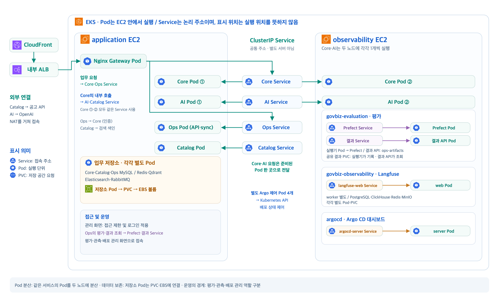
- 요청이 들어오는 경로: 사용자의 API 요청은 CloudFront → 내부 ALB → Nginx Gateway Pod를 거쳐 Core 또는 Ops Service로 전달됩니다.
- Service와 Pod: Service는 클러스터 내부에서 사용할 수 있는 접속 주소이고, Pod는 실제로 프로그램이 실행되는 단위입니다. Service는 요청을 받을 준비가 된 Pod로 연결합니다. 그림 가운데의 Service는 별도 서버를 뜻하지 않습니다.
- 두 EC2에 나눈 배치: application EC2에는 Gateway·Catalog·Ops와 업무 저장소가, observability EC2에는 평가·관측·배포 구성 요소가 배치됩니다. Core와 AI는 각각 두 노드에 Pod를 하나씩 두고 같은 Service를 통해 요청을 받습니다.
- 서비스 간 호출: Core는 필요에 따라 AI·Catalog Service를 호출합니다. Ops는 관리자 인증을 위해 Core에 요청하고, 평가 실행과 결과 확인을 위해 Prefect와 결과 Service를 이용합니다.
- 저장소와 데이터 유지: 업무 DB와 Redis·Qdrant·Elasticsearch·RabbitMQ는 애플리케이션과 별도의 Pod로 실행됩니다. 저장이 필요한 구성 요소는 PVC를 통해 EBS 볼륨을 연결해, Pod가 교체되어도 기존 볼륨을 다시 사용할 수 있도록 합니다.
- 평가·관측·배포와 외부 연결: Prefect는 평가 실행을 관리하고 결과 API는 공유 저장소의 결과를 제공합니다. Langfuse는 AI 호출을 추적하고 Argo CD는 배포를 관리합니다. Catalog의 공고 API와 AI의 OpenAI API 호출은 NAT를 거쳐 외부로 나갑니다.
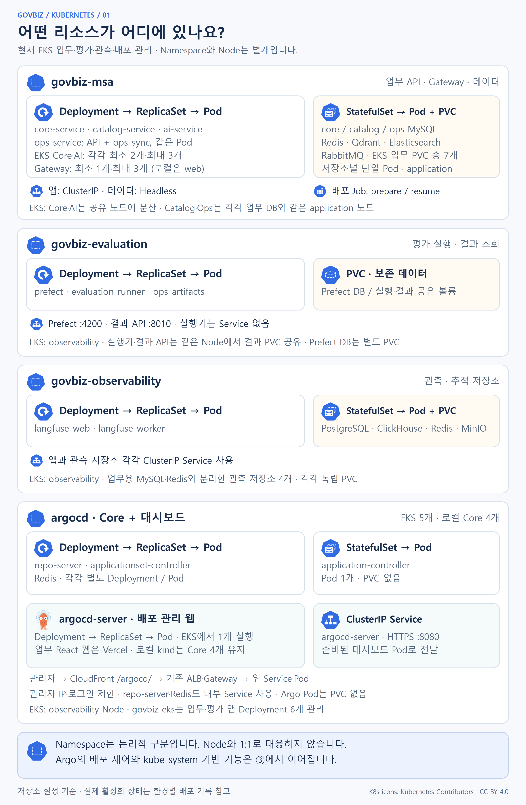
- Namespace와 Node: 업무 서비스는
govbiz-msa, 평가 도구는govbiz-evaluation, 관측 도구는govbiz-observability, 배포 도구는argocd로 논리적으로 구분합니다. Namespace는 관리 공간이고, Node는 실제 Pod가 실행되는 EC2입니다. - 기본 Node 2대: application Node에는 업무 DB·Catalog·Ops를, observability Node에는 Langfuse·Argo CD·Prefect·평가 실행기·결과 저장소를 배치합니다. Core와 AI는 각각 기본 Pod 2개를 서로 다른 Node에 분산합니다.
- 실행과 연결: Deployment가 원하는 앱 버전과 Pod 개수를 관리하고, ReplicaSet이 그 개수를 맞춥니다. 다른 서비스는 고정된 접속 이름을 제공하는 ClusterIP Service를 통해 준비된 Pod로 요청을 보냅니다. Deployment와 ReplicaSet은 요청을 중계하지 않습니다.
- API 요청 경로: 웹의 요청은 Vercel → CloudFront → 내부 ALB → EKS의 Nginx Gateway를 거쳐 Core·Ops Service로 전달됩니다. Core는 필요할 때 AI Service를 호출합니다. 모바일이 같은 API 주소를 사용하는 경우 해당 경로에 합류하며, 실기기 운영 검증은 별도입니다.
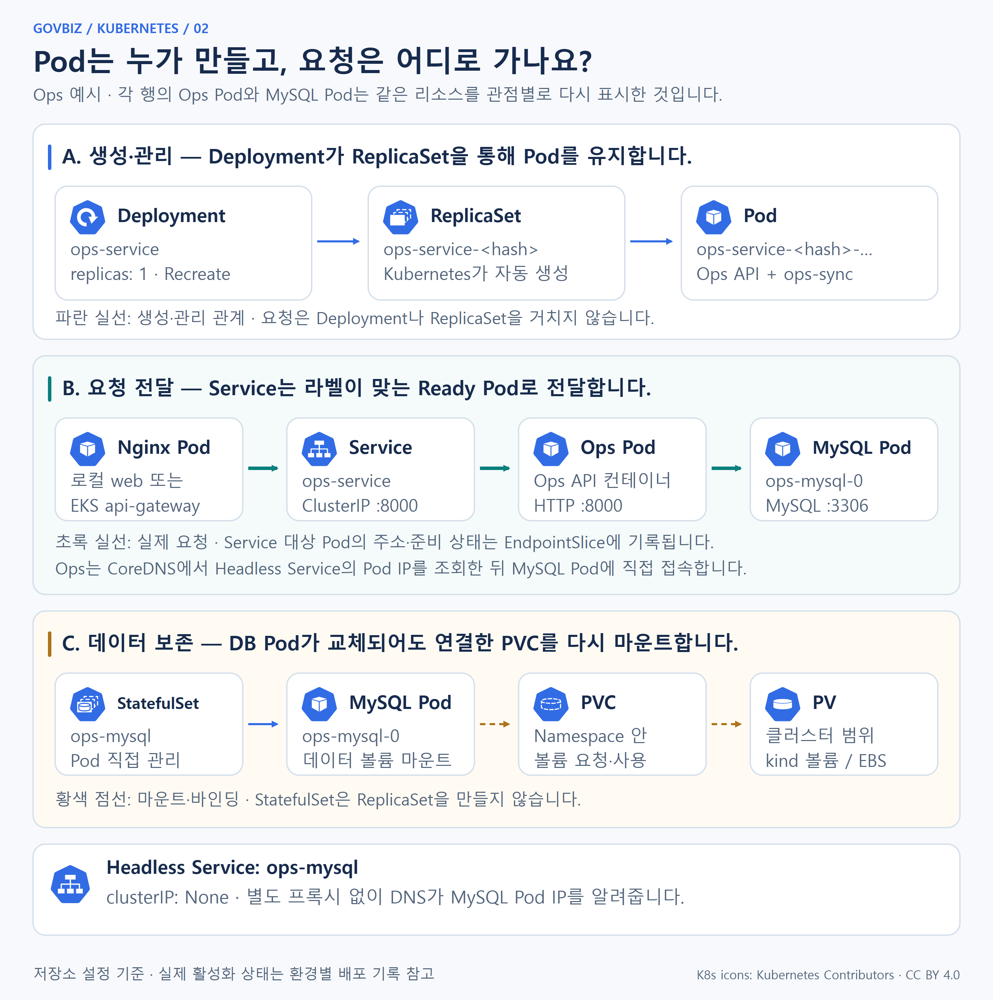
- HPA — Pod 개수 조절: Metrics Server의 지표를 사용해 컨테이너 CPU 요청량 대비 평균 사용률 60%를 기준으로 Core·AI는 각각 2~3개, Gateway는 1~3개로 조절합니다. 부하가 줄면 5분 안정화 구간을 거쳐 축소합니다.
- Cluster Autoscaler — Node 개수 조절: 늘어난 Pod가 자원이나 분산 조건 때문에 배치되지 못하면 application Node를 1대에서 최대 2대로 늘립니다. observability Node 1대를 합쳐 EC2는 기본 2대·최대 3대입니다. 추가 Node가 10분간 불필요하고 남은 Pod를 안전하게 옮길 수 있을 때 축소합니다.
- 분산과 배포 방식: Core·AI는 같은 서비스의 Pod가 한 Node에 함께 배치되지 않도록 하며, RollingUpdate로 기존 Pod를 최대 1개씩 교체합니다. Catalog·Ops 등 단일 실행 서비스는 Recreate 방식이므로 교체 중 잠시 접속이 끊길 수 있습니다.
- PDB — 자발적 퇴거 보호: Core·AI는 각각 최소 1개가 사용 가능하도록 설정해 노드 축소 같은 자발적 퇴거를 제한합니다. PDB가 갑작스러운 노드 장애를 막거나 DB 고가용성을 보장하는 것은 아닙니다.
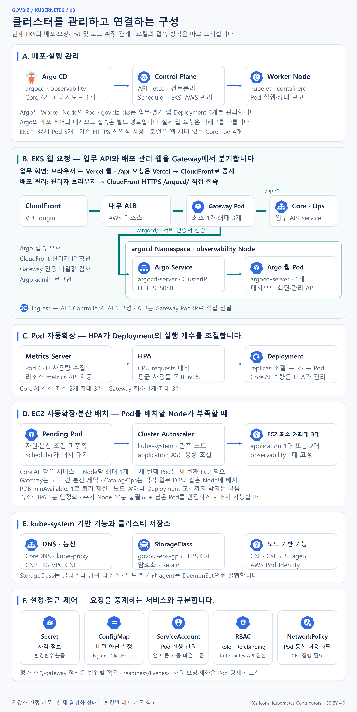
- StatefulSet·PVC·EBS: MySQL 등 상태를 가진 저장소는 StatefulSet으로 Pod와 저장소 연결을 관리합니다. PVC는 저장 공간 요청이고 PV는 연결된 볼륨 정보입니다. EKS는 EBS CSI와
gp3StorageClass를 사용하며, 기존 PVC와 볼륨을 유지하면 Pod 교체 후에도 데이터를 다시 사용할 수 있습니다.Retain으로 남은 볼륨을 재사용하려면 별도 복구 절차가 필요합니다. - 배포 전후 작업: PreSync는 새 평가 접수를 중지하고 진행 중인 평가를 확인한 뒤 필요한 DB 마이그레이션을 수행합니다. PostSync는 연결 상태를 확인하고 이번 배포를 위해 중지한 접수를 복구합니다.
- 구성의 한계: 이 EKS는 단일 AZ 구성이며 DB와 일부 서비스는 단일 실행입니다. Pod 분산이 다중 AZ 고가용성이나 모든 서비스의 무중단을 보장하지는 않습니다. 기본 2대로 자동 축소되는 과정은 문서상 관찰이 완료되지 않았으며, 과거 배포 기록과 현재 클러스터 상태도 구분해야 합니다.
구현 근거: 메인 README의 운영 구성 · Kubernetes 리소스 설명 · 자동 확장 설정
6. Core·Catalog·AI·Ops로 책임을 분리한 마이크로서비스 아키텍처 설계.
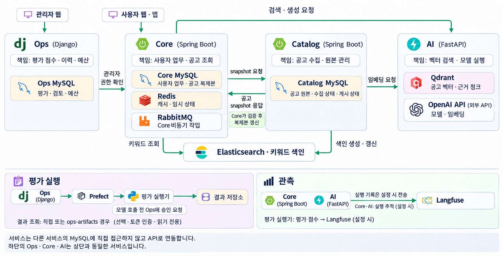
- Core: 계정·관심 공고·신청 준비 등 사용자 업무와 공개 API를 담당합니다. Core MySQL에 사용자 업무와 공고 조회용 복제본을 저장하고, Elasticsearch에서 키워드 후보를 조회합니다. Redis는 캐시·임시 상태에, RabbitMQ는 Core 내부 비동기 작업에 사용합니다.
- Catalog: 제공처 공고를 수집·정규화하고 Catalog MySQL에 원본과 수집·게시 상태를 관리합니다. Elasticsearch 키워드 색인을 만들고 AI 서비스에 벡터 준비를 요청하며, 검색 자료가 준비된 공고 snapshot을 내부 API로 제공합니다.
- AI: 임베딩·모델 추론·벡터 검색 실행을 담당합니다. Qdrant에 공고 검색 벡터와 답변 근거 청크를 저장하고 OpenAI API를 활용해 검색·생성 기능을 제공합니다.
- Ops: 평가 실행·사람 검토·예산·일정과 이력을 관리하고 Ops MySQL에 저장합니다. Prefect와 별도 실행기가 평가 작업을 수행하며, Langfuse는 추적·평가 점수, Evidently는 비교 보고서를 제공합니다. 관리자 인증 확인은 Core API와 연결합니다.
이 구조로 해결하려는 문제와 이점
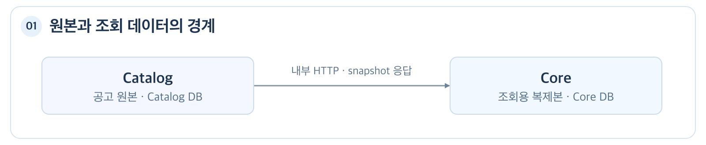
원본과 조회 데이터의 경계: Core가 Catalog DB를 직접 조회하거나 수정하지 않고 내부 HTTP 계약으로 snapshot을 받습니다. 각 DB 스키마에 대한 직접 의존과 공고 원본의 중복 쓰기를 줄이는 설계입니다.
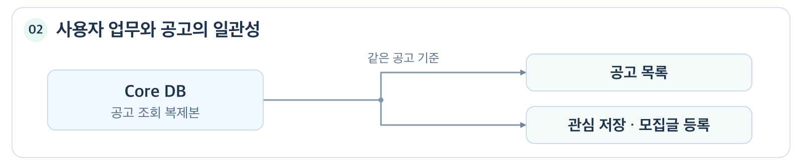
사용자 업무와 공고의 일관성: 새 공고가 화면에는 보이지만 Core에는 없어 관심 저장이나 모집글 등록에 실패하는 시간차를 줄이기 위해, 공개 목록과 연관 기능이 Core에 반영된 같은 조회 복제본을 사용합니다.
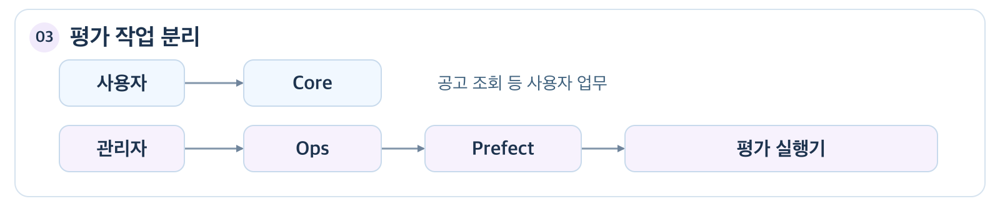
평가 작업 분리: 오래 걸리는 평가 계산을 Prefect와 별도 실행기로 넘겨 사용자 업무 API와 실행 경로를 구분하고, Ops에서 평가 이력과 검토를 관리합니다.
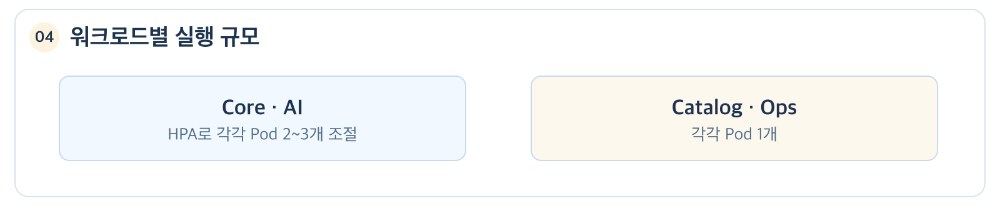
워크로드별 실행 규모: 현재 EKS 설정은 Core·AI에 HPA를 적용하고 Catalog·Ops는 각각 하나의 Pod로 운영하도록 구성해 서비스별 요구에 맞게 실행 규모를 다르게 설정합니다. 단일 Pod 서비스의 교체 중에는 접속이 끊길 수 있습니다.
트레이드오프: 복제 방식에는 반영 지연과 내부 API 계약·버전·재시도 관리가 필요합니다. 서비스가 나뉘어도 호출 의존성은 남으며, 이 설계만으로 장애 격리나 독립 배포·무중단이 보장되는 것은 아닙니다. 현재 자동 배포는 검증된 동일 커밋의 앱을 함께 발행합니다.
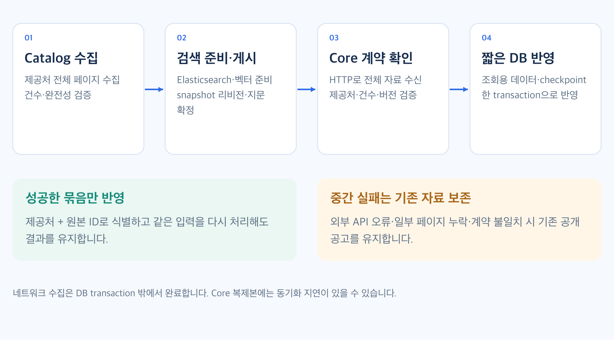
공고를 조회하는 서비스가 수집 중이거나 일부만 준비된 결과를 곧바로 사용하지 않도록, 게시와 Core 반영을 나누었습니다.
- 수집과 게시: Catalog가 제공처별 공고를 수집하고 완전성과 검색 색인 준비를 확인한 뒤 snapshot을 게시합니다.
- 수신과 계약 검증: Core가 내부 HTTP로 전체 snapshot을 받아 source·건수·중복·지문·버전 등을 검사합니다. 네트워크 수신은 DB transaction을 시작하기 전에 끝냅니다.
- 짧은 원자적 반영: 검증을 통과하면 Core가 조회 복제본과 신청서 분석 등록·checkpoint를 한 transaction으로 반영합니다. 기존 숫자 ID를 유지해 관심 저장 등 기존 관계를 이어갑니다.
- 실패 시 이전 결과 유지: 제공처 API 오류, 페이지 누락, HTTP 실패 또는 계약 불일치 등으로 정상 반영할 수 없으면 해당 제공처의 기존 공고를 유지합니다. 갱신 실패를 성공으로 표시하지 않으며, 새 공고가 반영되기까지 지연될 수 있습니다.
이 흐름은 부분적으로 준비된 공고가 사용자 업무에 먼저 노출되는 위험을 줄이고, 수집·전송 실패가 곧바로 기존 공고 목록을 지우지 않도록 합니다. 데이터가 항상 최신이거나 모든 장애에서 서비스가 중단되지 않는다는 의미는 아닙니다.
구현 근거: 서비스 분리 설계 · Core 반영 흐름 · 현재 서비스 구성
해결하려는 문제: 모델 평가와 보고서 생성은 사용자 업무 요청보다 오래 걸릴 수 있고, 관리자 권한·실행 이력·예산 관리도 필요합니다. 이 작업을 별도 경로로 관리해 사용자 업무 API의 책임과 평가 운영 책임을 구분했습니다.
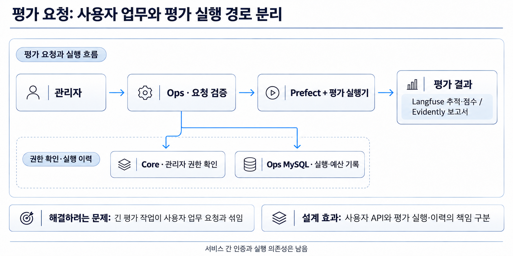
- 관리자 요청과 권한: 관리자가 평가 조건을 선택하면 Ops가 Core에 관리자 세션 확인을 요청하고 평가 요청을 검증합니다.
- 실행 기록과 예산: Ops는 실행 명세와 이력을 Ops MySQL에 저장합니다. 새 모델 호출이 필요한 평가라면 예산도 확인하고 예약합니다.
- 별도 작업 실행: Ops가 Prefect에 평가 작업을 요청하면 별도 평가 실행기가 실제 평가와 지표 계산을 수행합니다.
- 추적과 결과 확인: Langfuse에서 모델 호출 추적과 평가 점수를 확인하고, Evidently 비교 보고서와 실행 이력을 통해 결과를 검토합니다.
설계 효과: 긴 평가 계산을 사용자 업무 API의 요청 처리와 구분하면서 평가 이력·예산·사람 검토를 Ops에서 관리할 수 있습니다. Core의 인증 기준은 재사용하므로 권한 검증을 별도로 중복 구현하지 않습니다. 한계: Ops는 인증과 평가 실행에 필요한 다른 구성 요소에 의존하며, 분리만으로 장애가 완전히 격리되거나 무중단이 보장되지는 않습니다.
구현 근거: 평가 요청·실행 흐름
7. React 웹과 React Native 앱이 도메인·API 클라이언트·응답 검증을 공유하고, 플랫폼별 인증·전송 처리는 분리 설계.
업무 규칙과 응답 검증은 공유, 플랫폼 연결은 분리
- 공통으로 사용하는 부분: 웹과 앱은
@govbiz/shared에 있는 도메인 규칙·유스케이스·공고 API 클라이언트·응답 검증 코드를 함께 사용합니다. 공통 패키지는 각 앱에 포함되는 코드이며, 별도의 서버가 아니고 React에도 의존하지 않습니다. - 웹에서 담당하는 부분: React 웹은 브라우저 화면과 상태, 쿠키 세션을 관리합니다. 공통 API 클라이언트에는 웹에서 사용하는
coreFetch를 전달합니다. 공고 검색과 검색 복원에서는credentials: include로 쿠키를 함께 보냅니다. - 앱에서 담당하는 부분: React Native 앱은 네이티브 화면·화면 이동·세션 저장을 담당합니다. 앱용
fetch로 Bearer 인증을 처리하며, 공고 검색과 검색 복원에는credentials: omit을 사용합니다. - 플랫폼 연결을 분리한 이유: 웹과 앱은 공통 클라이언트에 각자의 API 주소와 요청 방식을 전달합니다. 공고를 다루는 공통 코드를 재사용하면서도 쿠키와 Bearer 인증처럼 플랫폼마다 다른 전송 방식을 적용할 수 있습니다.
- 응답 검증: 공통 코드가 서버 응답을 Zod로 검사하고 필요한 형태로 변환합니다. 예를 들어 근거 답변의 상태·내용과 인용 URL이 정해진 형식에 맞는지 확인합니다.
- 공유 범위: pnpm workspace와 하나의 lockfile을 사용하지만 모든 화면이나 API를 공유하는 것은 아닙니다. 화면·내비게이션·저장 방식은 각 플랫폼에서 관리합니다.
실제 화면: 같은 근거 답변 기능을 웹과 앱에서 제공
근거 답변의 구조·상태·공식 인용 URL을 공통 경계에서 검사합니다. GovAgent 응답에서는 사용자가 선택한 공고 ID도 대조합니다. 모든 API와 UI가 공유된 것은 아니며, 기기·스토어 배포 검증은 공통 코드·JS 번들 검증과 구분합니다.
구현 근거: 공유 구조 · 공통 API 클라이언트 · 근거 답변 검증 · GovAgent 응답 검증
8. 기술 보고서 PDF
표지·목차와 사용자·관리자 소개, 원본의 구성을 재배치한 상세 아키텍처 7장, 기술별 구현 설명을 담은 24페이지 PDF입니다. 5~11페이지에서 접속·서비스·평가·노드·외부 통신·빌드·배포 구조를 차례로 볼 수 있습니다.